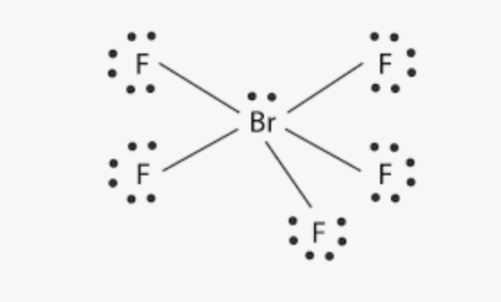
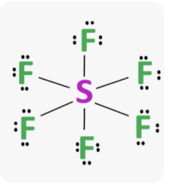
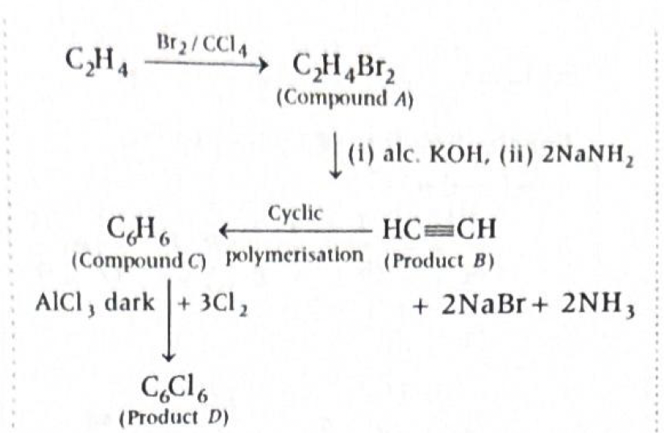
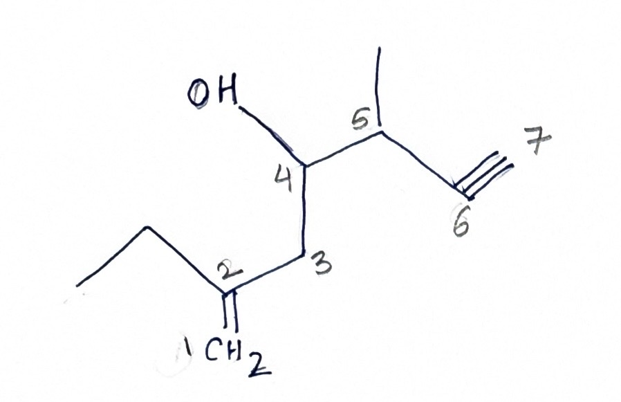

- \(E_1 = -2.18 \times 10^{-18}\ \text{J}\)
- \(n = 5\)
- \(h = 6.6 \times 10^{-34}\ \text{Js}\)
-
Find energy in the fifth orbit
\(E_5 = \dfrac{-2.18 \times 10^{-18}}{5^2}\)
\(E_5 = \dfrac{-2.18 \times 10^{-18}}{25}\)
\(E_5 = -8.72 \times 10^{-20}\ \text{J}\)
-
Find energy required for excitation from \(n=1\) to
\(n=5\)
\(\Delta E = E_5 - E_1\)
\(\Delta E = (-8.72 \times 10^{-20}) - (-2.18 \times 10^{-18})\)
\(\Delta E = 2.0928 \times 10^{-18}\ \text{J}\)
-
Use Planck relation
\(\Delta E = h\nu\)
\(\nu = \dfrac{\Delta E}{h}\)
\(\nu = \dfrac{2.0928 \times 10^{-18}}{6.6 \times 10^{-34}}\)
\(\nu = 3.17 \times 10^{15}\ \text{Hz}\)
-
In Bohr’s model, energy of electron in hydrogen atom is
quantized:
\(E_n \propto -\dfrac{1}{n^2}\)
- The negative sign shows that the electron is bound to the nucleus.
- As \(n\) increases, the energy becomes less negative, so energy must be supplied to excite the electron to a higher orbit.
-
The absorbed photon must supply exactly the energy gap:
\(\Delta E = h\nu\)
-
For hydrogen atom:
\(E_n = -\dfrac{2.18 \times 10^{-18}}{n^2}\ \text{J}\)
- Excitation from lower orbit to higher orbit requires absorption of energy.
- De-excitation from higher orbit to lower orbit releases energy.
-
For spectral questions:
\(\Delta E = E_f - E_i\)
-
Frequency of radiation:
\(\nu = \dfrac{\Delta E}{h}\)
- Since \(E_n\) is negative, always handle signs carefully while subtracting.
-
Directly use:
\(\Delta E = 2.18 \times 10^{-18}\left(1 - \dfrac{1}{n^2}\right)\)
-
Here \(n=5\), so:
\(\Delta E = 2.18 \times 10^{-18}\left(1 - \dfrac{1}{25}\right)\)
\(\Delta E = 2.18 \times 10^{-18}\cdot \dfrac{24}{25}\)
-
Then:
\(\nu = \dfrac{\Delta E}{6.6 \times 10^{-34}}\)
- Since \(\dfrac{2.1 \times 10^{-18}}{6.6 \times 10^{-34}} \approx 3.17 \times 10^{15}\), option \((d)\) comes quickly.
-
Ground state energy is very negative:
\(E_1 = -2.18 \times 10^{-18}\ \text{J}\)
-
Fifth orbit energy is closer to zero:
\(E_5 = -8.72 \times 10^{-20}\ \text{J}\)
- So the electron must absorb a positive energy difference.
- This means the required frequency must also be positive and fairly large.
- Since atomic transition energies are usually large, frequency is expected around \(10^{15}\ \text{Hz}\), not too small.
- Forgetting that \(E_n\) is negative.
- Using \(E_1 - E_5\) without checking whether the process is excitation or emission.
- Using \(\nu = \dfrac{\Delta E}{n}\) by mistake.
-
Forgetting to square \(n\) in:
\(E_n = \dfrac{E_1}{n^2}\)
- Dropping powers of ten carelessly.
- Chapter: Structure of Atom
- Topic: Bohr’s model of hydrogen atom
- Subtopic: Energy of electron in \(n^\text{th}\) orbit and excitation
-
Energy in \(n^\text{th}\) orbit:
\(E_n = -\dfrac{2.18 \times 10^{-18}}{n^2}\ \text{J}\)
-
Energy gap:
\(\Delta E = E_f - E_i\)
-
Frequency relation:
\(\nu = \dfrac{\Delta E}{h}\)
- Excitation: lower orbit \(\rightarrow\) higher orbit, energy absorbed
- De-excitation: higher orbit \(\rightarrow\) lower orbit, energy released
- Key sign idea: higher \(n\) means energy is less negative
- \(l=0 \rightarrow s\)
- \(l=1 \rightarrow p\)
- \(l=2 \rightarrow d\)
- \(l=3 \rightarrow f\)
- \(x\) = total number of electrons in \(s\)-subshells
- \(y\) = total number of electrons in \(d\)-subshells
-
Write the electronic configuration of
\(\mathrm{Sr}\,(Z=38)\)
\(\mathrm{Sr} = 1s^2\,2s^2\,2p^6\,3s^2\,3p^6\,4s^2\,3d^{10}\,4p^6\,5s^2\)
Or, in noble gas form:
\([\mathrm{Kr}]\,5s^2\)
-
Count electrons with \(l=0\)
Since \(l=0\) corresponds to the \(s\)-subshell, count all \(s\)-electrons:
- \(1s^2\)
- \(2s^2\)
- \(3s^2\)
- \(4s^2\)
- \(5s^2\)
Therefore:
\(x = 2+2+2+2+2 = 10\)
-
Count electrons with \(l=2\)
Since \(l=2\) corresponds to the \(d\)-subshell, count all \(d\)-electrons:
- \(3d^{10}\)
Therefore:
\(y = 10\)
-
Find \(x-y\)
\(x-y = 10-10 = 0\)
-
This question is based on the relation between subshells and
azimuthal quantum number:
\(s \rightarrow l=0,\quad p \rightarrow l=1,\quad d \rightarrow l=2,\quad f \rightarrow l=3\)
- Once electronic configuration is written, the problem becomes a simple counting of electrons in required subshells.
- For \(\mathrm{Sr}\), the \(s\)-subshells contribute \(10\) electrons in total, and the \(d\)-subshell contributes \(10\) electrons.
-
Azimuthal quantum number:
\(l = 0,1,2,3 \Rightarrow s,p,d,f\)
-
Maximum electrons in a subshell:
\(s=2,\quad p=6,\quad d=10,\quad f=14\)
- Electronic configuration is based on Aufbau principle, Pauli exclusion principle, and Hund’s rule.
-
\(\mathrm{Sr}(Z=38)\) has configuration:
\([\mathrm{Kr}]\,5s^2\)
- Questions of this type test whether you can connect quantum number with subshell and then count electrons correctly.
-
Use noble gas shorthand directly:
\(\mathrm{Sr} = [\mathrm{Kr}]\,5s^2\)
-
Now count quickly:
\(1s, 2s, 3s, 4s, 5s \Rightarrow 5 \text{ filled } s\text{-subshells}\)
\(x = 5 \times 2 = 10\)
-
For \(d\)-electrons, only \(3d^{10}\) is present:
\(y = 10\)
-
Hence:
\(x-y = 10-10 = 0\)
- The question is not asking for orbitals or shells; it is asking for electrons in specific subshell types.
-
So mentally translate:
\(l=0 \Rightarrow s\text{-electrons}\)
\(l=2 \Rightarrow d\text{-electrons}\)
- Then it becomes a fast subshell-counting problem.
- Counting number of \(s\)-orbitals instead of number of \(s\)-electrons.
- Forgetting \(5s^2\) in strontium.
- Assuming Sr has \(4d\)-electrons; it does not.
-
Mixing up:
\(l=1 \rightarrow p\)
\(l=2 \rightarrow d\)
- Chapter: Structure of Atom
- Topic: Quantum numbers
- Subtopic: Electronic configuration and subshell identification using azimuthal quantum number
-
Subshell relation:
\(l=0 \rightarrow s,\quad l=1 \rightarrow p,\quad l=2 \rightarrow d,\quad l=3 \rightarrow f\)
-
Maximum electrons:
\(s=2,\quad p=6,\quad d=10,\quad f=14\)
-
Sr configuration:
\([\mathrm{Kr}]\,5s^2\)
-
Total \(s\)-electrons in Sr:
\(10\)
-
Total \(d\)-electrons in Sr:
\(10\)
-
Required result:
\(x-y=0\)
- \(\mathrm{O \rightarrow III = -141\ kJ\ mol^{-1}}\)
- \(\mathrm{F \rightarrow IV = -328\ kJ\ mol^{-1}}\)
- \(\mathrm{Cl \rightarrow II = -349\ kJ\ mol^{-1}}\)
- \(\mathrm{S \rightarrow I = -200\ kJ\ mol^{-1}}\)
-
Recall what electron gain enthalpy means
Electron gain enthalpy is the enthalpy change when an isolated gaseous atom accepts an electron:
\(\mathrm{X(g) + e^- \rightarrow X^-(g)}\)
If energy is released, the value is negative.
So, more negative value means greater tendency to accept an electron.
-
Use the standard periodic trend
In general:
- Across a period, electron gain enthalpy becomes more negative.
- Down a group, it generally becomes less negative.
But this question is based on important NCERT/JEE exceptions.
-
Use the two key exceptions
- \(\mathrm{Cl}\) has more negative electron gain enthalpy than \(\mathrm{F}\).
- \(\mathrm{S}\) has more negative electron gain enthalpy than \(\mathrm{O}\).
So the order here is:
\(\mathrm{Cl > F > S > O}\)
Here “greater” means more negative electron gain enthalpy.
-
Match with the given values
Given values are:
- \(\mathrm{I = -200}\)
- \(\mathrm{II = -349}\)
- \(\mathrm{III = -141}\)
- \(\mathrm{IV = -328}\)
The most negative value is \(-349\), so that must be \(\mathrm{Cl}\).
The next is \(-328\), so that must be \(\mathrm{F}\).
Then \(-200\) must be \(\mathrm{S}\).
And \(-141\) must be \(\mathrm{O}\).
Hence:
\(\mathrm{O \rightarrow III,\ F \rightarrow IV,\ Cl \rightarrow II,\ S \rightarrow I}\)
-
Why \(\mathrm{Cl}\) has more negative electron gain
enthalpy than \(\mathrm{F}\)
At first glance, one may think fluorine should have the most negative value because it is smaller and should attract the incoming electron more strongly.
But fluorine is extremely small, so the added electron enters a very compact \(2p\) orbital.
This causes strong electron-electron repulsion.
In chlorine, the incoming electron enters a larger \(3p\) orbital, where repulsion is less.
So chlorine releases more energy on gaining an electron.
Therefore:
\(\Delta_{\mathrm{eg}}H(\mathrm{Cl})\) is more negative than \(\Delta_{\mathrm{eg}}H(\mathrm{F})\).
-
Why \(\mathrm{S}\) has more negative electron gain enthalpy
than \(\mathrm{O}\)
The same logic applies here.
Oxygen is very small, and the incoming electron enters a compact \(2p\) orbital with greater repulsion.
Sulfur accepts the electron into the larger \(3p\) orbital, so repulsion is less.
Hence sulfur has more negative electron gain enthalpy than oxygen.
- \(\mathrm{O: 1s^2\,2s^2\,2p^4}\)
- \(\mathrm{F: 1s^2\,2s^2\,2p^5}\)
- \(\mathrm{S: [Ne]\,3s^2\,3p^4}\)
- \(\mathrm{Cl: [Ne]\,3s^2\,3p^5}\)
- \(\mathrm{O \rightarrow 2p^5}\)
- \(\mathrm{F \rightarrow 2p^6}\)
- \(\mathrm{S \rightarrow 3p^5}\)
- \(\mathrm{Cl \rightarrow 3p^6}\)
-
Definition:
Electron gain enthalpy is the enthalpy change when an isolated gaseous atom gains an electron:
\(\mathrm{X(g) + e^- \rightarrow X^-(g)}\)
-
Sign convention:
If energy is released, \(\Delta_{\mathrm{eg}}H\) is negative.
-
General trend across a period:
Electron gain enthalpy generally becomes more negative from left to right.
-
General trend down a group:
Electron gain enthalpy generally becomes less negative down a group.
-
Important exceptions:
- \(\mathrm{Cl}\) has more negative electron gain enthalpy than \(\mathrm{F}\).
- \(\mathrm{S}\) has more negative electron gain enthalpy than \(\mathrm{O}\).
-
Reason for exceptions:
Very small atoms such as \(\mathrm{O}\) and \(\mathrm{F}\) have compact orbitals, so the added electron experiences greater electron-electron repulsion.
- Memorize the two standard exceptions:
- \(\mathrm{Cl > F}\) in electron gain enthalpy magnitude
- \(\mathrm{S > O}\) in electron gain enthalpy magnitude
- So for these four elements directly write:
- \(\mathrm{Cl > F > S > O}\)
- Then assign values from most negative to least negative.
- That gives:
- \(\mathrm{Cl = -349,\ F = -328,\ S = -200,\ O = -141}\)
- If any option gives \(\mathrm{F}\) a more negative value than \(\mathrm{Cl}\), reject it.
- If any option gives \(\mathrm{O}\) a more negative value than \(\mathrm{S}\), reject it.
- That eliminates wrong options very quickly.
- Thinking that fluorine must always have the most negative electron gain enthalpy because it is the smallest.
- Forgetting that compact size can increase electron-electron repulsion.
- Confusing electron gain enthalpy with electronegativity.
- Forgetting the standard exceptions \(\mathrm{Cl > F}\) and \(\mathrm{S > O}\).
- Chapter: Classification of Elements and Periodicity in Properties
- Topic: Periodic properties
- Subtopic: Electron gain enthalpy \(\left(\Delta_{\mathrm{eg}}H\right)\)
-
Definition:
\(\mathrm{X(g) + e^- \rightarrow X^-(g)}\)
- More negative \(\Delta_{\mathrm{eg}}H\): stronger tendency to gain electron
- General trend: more negative across period, less negative down group
-
Key exceptions:
\(\mathrm{Cl > F}\)
\(\mathrm{S > O}\)
-
Order in this question:
\(\mathrm{Cl > F > S > O}\)
-
Correct mapping:
\(\mathrm{O \rightarrow III,\ F \rightarrow IV,\ Cl \rightarrow II,\ S \rightarrow I}\)
-
First identify which elements are metals
Metals generally have:
- low first ionisation enthalpy
- low tendency to gain electron
- ability to lose electron(s) easily
From the data:
- Element I: \(\Delta_i H_1 = 520,\ \Delta_i H_2 = 7300,\ \Delta_{\mathrm{eg}}H = -60\)
- Element II: \(\Delta_i H_1 = 490,\ \Delta_i H_2 = 3051,\ \Delta_{\mathrm{eg}}H = -48\)
- Element III: \(\Delta_i H_1 = 1681,\ \Delta_i H_2 = 3374,\ \Delta_{\mathrm{eg}}H = -328\)
- Element IV: \(\Delta_i H_1 = 2372,\ \Delta_i H_2 = 5251,\ \Delta_{\mathrm{eg}}H = +48\)
Elements I and II have low first ionisation enthalpy, so they are metallic candidates.
Element III has very high negative electron gain enthalpy \(( -328 )\), which is typical of a non-metal such as a halogen.
Element IV has very high ionisation enthalpy and positive electron gain enthalpy, which is typical of a noble gas type element.
So the competition is mainly between I and II.
-
Use first ionisation enthalpy to compare metallic
reactivity
For metals, reactivity depends mainly on how easily they lose their valence electron.
Lower first ionisation enthalpy means easier loss of the first electron and hence greater metallic reactivity.
Compare:
- Element I: \(\Delta_i H_1 = 520\)
- Element II: \(\Delta_i H_1 = 490\)
Since \(490 < 520\), element II loses its first electron more easily.
Therefore element II is more reactive than element I.
-
Use second ionisation enthalpy to confirm the type of
metal
A very high second ionisation enthalpy means that after losing one electron, the element attains a stable noble-gas configuration.
This is the characteristic behavior of alkali metals \((ns^1)\).
That is why both I and II show:
- low \(\Delta_i H_1\)
- large jump to \(\Delta_i H_2\)
This tells us that both are Group 1 type metals.
The textbook clue also points in this direction: low 1st ionisation enthalpy, high 2nd ionisation enthalpy, and low electron gain enthalpy support metallic reactivity.
-
Use electron gain enthalpy as supporting evidence
Electron gain enthalpy is not the main deciding factor for metallic reactivity, but it helps distinguish metals from non-metals.
- Metals usually do not strongly prefer gaining electrons.
- Halogens strongly prefer gaining electrons, so they have highly negative electron gain enthalpy.
Here:
- Element I: \(-60\)
- Element II: \(-48\)
These values are only slightly negative, which supports metallic character.
But element III has \(-328\), which strongly indicates non-metallic character.
-
Final conclusion from the data
Among the metals, element II has:
- low first ionisation enthalpy
- high second ionisation enthalpy
- low electron gain enthalpy
Hence, it is the most reactive metal.
\(\boxed{(a)\ \text{II}}\)
-
Metallic reactivity depends on electron loss
A metal reacts by losing electron(s) to form cation(s).
So lower first ionisation enthalpy means higher metallic reactivity.
-
Very high second ionisation enthalpy indicates one valence
electron
If the second ionisation enthalpy is extremely high, it means that after losing one electron, the atom becomes especially stable.
This is the usual pattern of alkali metals.
-
Electron gain enthalpy helps separate metals from
non-metals
Very negative \(\Delta_{\mathrm{eg}}H\) suggests strong tendency to gain electron, which is typical of non-metals.
Small negative values are more consistent with metals.
-
First ionisation enthalpy:
\(\mathrm{X(g) \rightarrow X^+(g) + e^-}\)
It is the energy required to remove the first electron from an isolated gaseous atom.
-
Second ionisation enthalpy:
\(\mathrm{X^+(g) \rightarrow X^{2+}(g) + e^-}\)
It is always greater than the first ionisation enthalpy.
-
Electron gain enthalpy:
\(\mathrm{X(g) + e^- \rightarrow X^-(g)}\)
More negative value means greater tendency to gain electron.
-
For metals:
- low ionisation enthalpy
- high electropositive character
- easy loss of valence electron
-
For alkali metals:
- very low first ionisation enthalpy
- very high second ionisation enthalpy
- high metallic reactivity
-
Down Group 1:
atomic size increases, first ionisation enthalpy decreases, and metallic reactivity increases.
- Element I behaves like \(\mathrm{Li}\)
- Element II behaves like \(\mathrm{Na}\)
- Element III behaves like \(\mathrm{F}\)
- Element IV behaves like a noble gas such as \(\mathrm{He}\)
-
First remove obvious non-metals:
- very negative electron gain enthalpy \(\rightarrow\) halogen-like
- positive electron gain enthalpy with very high IE \(\rightarrow\) noble gas-like
- Then among the remaining metals, choose the one with lowest first ionisation enthalpy.
- If there is a huge jump from \(\Delta_i H_1\) to \(\Delta_i H_2\), think alkali metal.
-
Here:
\(\Delta_i H_1(\mathrm{II}) = 490 < 520 = \Delta_i H_1(\mathrm{I})\)
- So directly mark II.
- Choosing the element with the highest second ionisation enthalpy without first checking first ionisation enthalpy.
- Thinking electron gain enthalpy alone decides metallic reactivity.
- Failing to notice that a huge jump from first to second IE indicates one valence electron.
- Mistaking element III for a metal despite its highly negative electron gain enthalpy.
- Chapter: Classification of Elements and Periodicity in Properties
- Topic: Periodic trends and metallic character
- Subtopic: Ionisation enthalpy, electron gain enthalpy, and reactivity of alkali metals
-
First ionisation enthalpy:
\(\mathrm{X(g) \rightarrow X^+(g) + e^-}\)
-
Second ionisation enthalpy:
\(\mathrm{X^+(g) \rightarrow X^{2+}(g) + e^-}\)
-
Electron gain enthalpy:
\(\mathrm{X(g) + e^- \rightarrow X^-(g)}\)
- Most reactive metal: the one with the lowest \(\Delta_i H_1\) among metallic candidates
- Huge jump from \(\Delta_i H_1\) to \(\Delta_i H_2\): usually indicates one valence electron
- Very negative \(\Delta_{\mathrm{eg}}H\): non-metal tendency
- Positive \(\Delta_{\mathrm{eg}}H\): noble gas type resistance to gaining electron
-
Bond order of \(\mathrm{O_2}\)
For \(\mathrm{O_2}\), the number of bonding electrons is \(10\) and antibonding electrons is \(6\).
\(\text{B.O. of } \mathrm{O_2} = \dfrac{1}{2}(10 - 6) = 2\)
-
Bond order of \(\mathrm{O_2^+}\)
\(\mathrm{O_2^+}\) is formed by removing one electron from \(\mathrm{O_2}\).
In oxygen, the electron is removed from the highest occupied antibonding molecular orbital \(\pi^*2p\).
So antibonding electrons decrease from \(6\) to \(5\).
\(\text{B.O. of } \mathrm{O_2^+} = \dfrac{1}{2}(10 - 5) = 2.5\)
-
Bond order of \(\mathrm{O_2^-}\)
\(\mathrm{O_2^-}\) is formed by adding one electron to \(\mathrm{O_2}\).
This extra electron enters the antibonding \(\pi^*2p\) orbital.
So antibonding electrons increase from \(6\) to \(7\).
\(\text{B.O. of } \mathrm{O_2^-} = \dfrac{1}{2}(10 - 7) = 1.5\)
-
Bond order of \(\mathrm{O_2^{2+}}\)
\(\mathrm{O_2^{2+}}\) is formed by removing two electrons from \(\mathrm{O_2}\).
Both are removed from antibonding \(\pi^*2p\) orbitals.
So antibonding electrons decrease from \(6\) to \(4\).
\(\text{B.O. of } \mathrm{O_2^{2+}} = \dfrac{1}{2}(10 - 4) = 3\)
-
Now add all bond orders
\(\text{Sum} = 2 + 2.5 + 1.5 + 3 = 9\)
- In Molecular Orbital Theory, bond strength depends on the difference between bonding and antibonding electrons.
- For the oxygen family, the changing electrons go into or come out of the antibonding \(\pi^*2p\) orbitals.
- Removing an electron from an antibonding orbital increases bond order.
- Adding an electron to an antibonding orbital decreases bond order.
-
Bond order formula:
\(\text{Bond order} = \dfrac{N_b - N_a}{2}\)
- For oxygen species: electron addition or removal usually affects the antibonding \(\pi^*2p\) orbitals.
- If antibonding electrons decrease, bond order increases.
- If antibonding electrons increase, bond order decreases.
- Higher bond order means stronger bond and shorter bond length.
- \(\mathrm{O_2^-}\): \(1.5\)
- \(\mathrm{O_2}\): \(2\)
- \(\mathrm{O_2^+}\): \(2.5\)
- \(\mathrm{O_2^{2+}}\): \(3\)
- Start with \(\mathrm{O_2}\), whose bond order is \(2\).
- \(\mathrm{O_2^+}\): remove one antibonding electron \(\Rightarrow\) bond order becomes \(2.5\)
- \(\mathrm{O_2^-}\): add one antibonding electron \(\Rightarrow\) bond order becomes \(1.5\)
- \(\mathrm{O_2^{2+}}\): remove two antibonding electrons \(\Rightarrow\) bond order becomes \(3\)
-
Memorize only one fact:
\(\mathrm{Bond\ order\ of\ O_2 = 2}\)
-
Then use the shortcut:
Removing one antibonding electron \(\Rightarrow\) bond order increases by \(0.5\)
- Adding one antibonding electron \(\Rightarrow\) bond order decreases by \(0.5\)
-
So directly:
\(\mathrm{O_2^+} = 2.5,\quad O_2^- = 1.5,\quad O_2^{2+} = 3\)
-
Add:
\(2 + 2.5 + 1.5 + 3 = 9\)
-
Text-only orbital idea:
-
O\(_2\) family: last electrons are in antibonding
\(\pi^*\) orbitals
O\(_2\) : \(\pi^*\) ↑ ↑ \(\Rightarrow\) B.O. = 2
O\(_2^+\) : \(\pi^*\) ↑ \(\Rightarrow\) B.O. = 2.5
O\(_2^-\) : \(\pi^*\) ↑↓ ↑ \(\Rightarrow\) B.O. = 1.5
O\(_2^{2+}\) : \(\pi^*\) empty \(\Rightarrow\) B.O. = 3
-
O\(_2\) family: last electrons are in antibonding
\(\pi^*\) orbitals
- Forgetting that for oxygen species, the electron is added to or removed from an antibonding orbital, not a bonding orbital.
- Using the wrong formula such as \(\dfrac{N_b + N_a}{2}\) instead of \(\dfrac{N_b - N_a}{2}\).
- Forgetting that removing electrons from antibonding orbitals increases bond order.
- Mixing up \(\mathrm{O_2^+}\) and \(\mathrm{O_2^-}\).
- Chapter: Chemical Bonding and Molecular Structure
- Topic: Molecular Orbital Theory
- Subtopic: Bond order of oxygen species and effect of addition/removal of electrons
-
Bond order formula:
\(\text{B.O.} = \dfrac{N_b - N_a}{2}\)
- For oxygen family: electrons change in \(\pi^*2p\) antibonding orbitals
- Remove antibonding electron: bond order increases by \(0.5\)
- Add antibonding electron: bond order decreases by \(0.5\)
-
Base value:
\(\mathrm{O_2 = 2}\)
-
Shortcut values:
\(\mathrm{O_2^- = 1.5,\quad O_2 = 2,\quad O_2^+ = 2.5,\quad O_2^{2+} = 3}\)
-
Analyse \(SF_6\)
In \(SF_6\), sulfur is the central atom.
- Valence electrons on \(S = 6\)
- It forms 6 sigma bonds with 6 fluorine atoms
- Lone pairs on \(S = 0\)
So, total electron pairs around sulfur \(= 6\).
Therefore:
- Hybridisation \(= sp^3d^2\)
- Electron pair geometry \(=\) octahedral
- Molecular shape \(=\) octahedral
-
Analyse \(BrF_5\)
In \(BrF_5\), bromine is the central atom.
- Valence electrons on \(Br = 7\)
- It forms 5 sigma bonds with 5 fluorine atoms
- One lone pair remains on bromine
So, total electron pairs around bromine \(= 6\).
Therefore:
- Hybridisation \(= sp^3d^2\)
- Electron pair geometry \(=\) octahedral
- Molecular shape \(=\) square pyramidal
-
Now check Statement I
Statement I says that hybridisation is not same in both \(SF_6\) and \(BrF_5\).
This is incorrect because both species have steric number \(6\), so both have the same hybridisation:
\(sp^3d^2\)
So Statement I is false.
-
Now check Statement II
Statement II says that \(BrF_5\) is square pyramidal while \(SF_6\) is octahedral in shape.
This is correct.
So Statement II is true.
-
Final conclusion
Statement I is incorrect, but Statement II is correct.
Hence the correct option is:
\(\boxed{(c)}\)
- Hybridisation depends on the total number of electron domains around the central atom.
- Shape depends on both bond pairs and lone pairs.
- Thus, two molecules can have the same hybridisation but different shapes.
- Here both \(SF_6\) and \(BrF_5\) have steric number \(6\), so both are \(sp^3d^2\) hybridised.
- But \(SF_6\) has no lone pair, whereas \(BrF_5\) has one lone pair, so their shapes differ.
- According to VSEPR theory, electron pairs around the central atom arrange themselves to minimize repulsion.
- For steric number \(6\), the electron pair geometry is octahedral.
-
If there are:
- \(6\) bond pairs and \(0\) lone pairs, shape is octahedral
- \(5\) bond pairs and \(1\) lone pair, shape is square pyramidal
- \(4\) bond pairs and \(2\) lone pairs, shape is square planar
-
Therefore:
- \(SF_6\) is of type \(AX_6\), so it is octahedral
- \(BrF_5\) is of type \(AX_5E\), so it is square pyramidal
- The textbook clue also supports this directly: both \(SF_6\) and \(BrF_5\) have the same hybridisation, \(sp^3d^2\).
- \(SF_6\): \(6\) bond pairs, \(0\) lone pairs, steric number \(6\), hybridisation \(sp^3d^2\), shape octahedral
- \(BrF_5\): \(5\) bond pairs, \(1\) lone pair, steric number \(6\), hybridisation \(sp^3d^2\), shape square pyramidal
-


- First count electron domains, not shape directly.
- \(SF_6\): \(6\) bonded atoms \(\Rightarrow\) steric number \(6\)
- \(BrF_5\): \(5\) bonded atoms \(+\) \(1\) lone pair \(\Rightarrow\) steric number \(6\)
- So both immediately give hybridisation \(sp^3d^2\).
- That makes Statement I false in a few seconds.
-
Then recall the standard shapes:
- \(AX_6 \Rightarrow\) octahedral
- \(AX_5E \Rightarrow\) square pyramidal
- So Statement II is true.
- For steric number \(6\):
- \(0\) lone pairs \(\Rightarrow\) octahedral
- \(1\) lone pair \(\Rightarrow\) square pyramidal
- \(2\) lone pairs \(\Rightarrow\) square planar
- Confusing hybridisation with molecular shape.
- Thinking that different shapes always mean different hybridisation.
- Forgetting to count lone pairs on the central atom.
- Writing \(BrF_5\) as octahedral shape instead of square pyramidal.
- Chapter: Chemical Bonding and Molecular Structure
- Topic: VSEPR theory and hybridisation
- Subtopic: Shapes of molecules, lone pair effect, interhalogen compounds and hypervalent molecules
- Steric number \(6\): electron pair geometry \(=\) octahedral
- \(AX_6\): octahedral
- \(AX_5E\): square pyramidal
- \(AX_4E_2\): square planar
- \(SF_6\): \(sp^3d^2\), octahedral
- \(BrF_5\): \(sp^3d^2\), square pyramidal
- Key idea: same hybridisation can still give different molecular shapes if lone pairs differ.
- \(M = 0.040\ \text{kg mol}^{-1}\)
- \(v_{\mathrm{rms}} = 20\ \text{m s}^{-1}\)
-
Write the formula
\(E=\frac{1}{2}Mv_{\mathrm{rms}}^2\)
-
Substitute the given values
\(E=\frac{1}{2}\times 0.040 \times (20)^2\)
-
Simplify step by step
\((20)^2 = 400\)
So:
\(E=\frac{1}{2}\times 0.040 \times 400\)
\(E=0.020 \times 400\)
\(E=8\ \text{J mol}^{-1}\)
-
In kinetic theory, the translational kinetic energy of a
moving particle is:
\(\frac{1}{2}mv^2\)
-
For one mole of gas, molecular mass \(m\) is replaced by molar
mass \(M\), so:
\(E=\frac{1}{2}Mv_{\mathrm{rms}}^2\)
- The textbook clue uses exactly this standard result, so the calculation follows directly.
-
According to kinetic theory of gases, the average
translational kinetic energy per mole is:
\(E=\frac{1}{2}Mv_{\mathrm{rms}}^2\)
-
A very important equivalent relation is:
\(\frac{1}{2}Mv_{\mathrm{rms}}^2=\frac{3}{2}RT\)
- This means the average kinetic energy of a gas depends only on temperature, not on the nature of the gas.
-
Another related standard formula is:
\(v_{\mathrm{rms}}=\sqrt{\frac{3RT}{M}}\)
-
Squaring this and multiplying by \(\frac{1}{2}M\) gives:
\(\frac{1}{2}Mv_{\mathrm{rms}}^2=\frac{3}{2}RT\)
- So the rms speed formula and kinetic energy formula are directly connected.
-
Start with:
\(v_{\mathrm{rms}}=\sqrt{\frac{3RT}{M}}\)
-
Square both sides:
\(v_{\mathrm{rms}}^2=\frac{3RT}{M}\)
-
Multiply by \(\frac{1}{2}M\):
\(\frac{1}{2}Mv_{\mathrm{rms}}^2=\frac{3}{2}RT\)
-
If the question asks for
average kinetic energy per mole and gives
\(M\) and \(v_{\mathrm{rms}}\), use directly:
\(E=\frac{1}{2}Mv_{\mathrm{rms}}^2\)
-
Here:
\((20)^2=400\)
-
Then:
\(0.040 \times 400 = 16\)
-
Half of that:
\(E=\frac{16}{2}=8\)
- So the answer can be obtained mentally in a few seconds.
-
Kinetic energy varies as the square of speed:
\(E \propto v^2\)
- So even a modest increase in speed causes a much larger increase in kinetic energy.
- Here the rms speed is already given, so there is no need to first calculate temperature.
-
Using molar mass in grams instead of kilograms.
Here \(40\ \text{g mol}^{-1}\) must be written as \(0.040\ \text{kg mol}^{-1}\).
-
Mixing up per mole and
per molecule.
For per molecule, use \(\frac{1}{2}mv^2\). For per mole, use \(\frac{1}{2}Mv^2\).
- Confusing \(v_{\mathrm{rms}}\) with average speed or most probable speed.
-
Forgetting that energy here is asked in:
\(\text{J mol}^{-1}\)
- Chapter: States of Matter / Kinetic Theory of Gases
- Topic: Kinetic theory of gases
- Subtopic: Relation between rms speed and average kinetic energy
-
Average kinetic energy per molecule:
\(\frac{1}{2}mv_{\mathrm{rms}}^2\)
-
Average kinetic energy per mole:
\(\frac{1}{2}Mv_{\mathrm{rms}}^2\)
-
Equivalent NCERT relation:
\(\frac{1}{2}Mv_{\mathrm{rms}}^2=\frac{3}{2}RT\)
-
RMS speed:
\(v_{\mathrm{rms}}=\sqrt{\frac{3RT}{M}}\)
- Key idea: average kinetic energy depends only on temperature.
- Unit caution: always use \(M\) in \(\text{kg mol}^{-1}\).
-
Calculate mass loss corresponding to the reaction
From the balanced equation:
\(2NaHCO_3 \rightarrow Na_2CO_3 + CO_2 + H_2O\)
Molar mass of \(NaHCO_3 = 84\)
So:
\(2NaHCO_3 = 168\ \text{g}\)
Mass of gases lost:
\(CO_2 + H_2O = 44 + 18 = 62\ \text{g}\)
Therefore:
\(168\ \text{g of } NaHCO_3 \rightarrow 62\ \text{g mass loss}\)
-
Find mass of \(NaHCO_3\) present in the mixture
Given actual mass loss \(= 0.62\ \text{g}\)
Let mass of \(NaHCO_3\) in the mixture be \(x\ \text{g}\).
Then:
\(168\ \text{g } NaHCO_3 \rightarrow 62\ \text{g loss}\)
\(x\ \text{g } NaHCO_3 \rightarrow 0.62\ \text{g loss}\)
So:
\(x = \frac{168}{62}\times 0.62\)
\(x = 1.68\ \text{g}\)
-
Find mass of \(Na_2CO_3\) in the original mixture
Total mass of mixture \(= 4.0\ \text{g}\)
So:
\(\text{Mass of } Na_2CO_3 = 4.0 - 1.68 = 2.32\ \text{g}\)
-
Calculate percentage of sodium carbonate
\(\%\ Na_2CO_3 = \frac{2.32}{4.0}\times 100\)
\(= 58\%\)
-
Only \(NaHCO_3\) decomposes on heating:
\(2NaHCO_3 \xrightarrow{\Delta} Na_2CO_3 + CO_2 + H_2O\)
-
The decrease in mass comes only from gases escaping from the
mixture:
\(CO_2\) and \(H_2O\)
- So the observed mass loss tells us directly how much \(NaHCO_3\) was present initially.
- Once the mass of \(NaHCO_3\) is found, the remaining mass must be \(Na_2CO_3\).
- Hydrogen carbonates are less thermally stable than carbonates.
-
Sodium hydrogen carbonate decomposes on heating as:
\(2NaHCO_3 \xrightarrow{\Delta} Na_2CO_3 + CO_2 + H_2O\)
- In thermal decomposition numericals, the escaping gaseous products are the reason for loss in mass.
-
Such questions are solved using stoichiometry:
\(\text{known mass loss} \rightarrow \text{mass of decomposed substance}\)
- This is a standard mole concept pattern often mixed with decomposition reactions.
-
Memorize this direct stoichiometric result from the reaction:
\(168\ \text{g } NaHCO_3 \rightarrow 62\ \text{g loss}\)
- Here mass loss is \(0.62\ \text{g}\), which is \(\frac{62}{100}\ \text{g}\).
-
So immediately:
\(\text{Mass of } NaHCO_3 = 168\times \frac{0.62}{62} = 1.68\ \text{g}\)
-
Then:
\(\text{Mass of } Na_2CO_3 = 4.0 - 1.68 = 2.32\ \text{g}\)
-
And:
\(\%\ Na_2CO_3 = \frac{2.32}{4}\times 100 = 58\%\)
-
Forgetting the correct decomposition reaction:
\(2NaHCO_3 \rightarrow Na_2CO_3 + CO_2 + H_2O\)
- Using only \(CO_2\) for mass loss and forgetting that \(H_2O\) also escapes.
- Taking \(0.62\ \text{g}\) directly as the mass of \(NaHCO_3\), which is incorrect.
- Finding percentage of \(NaHCO_3\) instead of percentage of \(Na_2CO_3\).
- Chapter: Mole Concept / Stoichiometry
- Topic: Thermal decomposition reactions
- Subtopic: Mass loss method and percentage composition of a mixture
-
Thermal decomposition:
\(2NaHCO_3 \xrightarrow{\Delta} Na_2CO_3 + CO_2 + H_2O\)
-
Key stoichiometric fact:
\(168\ \text{g } NaHCO_3 \rightarrow 62\ \text{g loss}\)
-
Mass loss comes from:
\(CO_2 + H_2O\)
-
Strategy:
\(\text{mass loss} \rightarrow \text{mass of } NaHCO_3 \rightarrow \text{mass of } Na_2CO_3\)
-
Final percentage formula:
\(\%\ \text{component} = \frac{\text{mass of component}}{\text{total mass of mixture}}\times 100\)
- \(\Delta_r G^\circ = -115\ \text{kJ mol}^{-1}\)
- \(T = 298\ \text{K}\)
- \(R = 8.314\ \text{J K}^{-1}\text{mol}^{-1}\)
-
Apply the Gibbs free energy relation
\(\Delta_r G^\circ = -RT \ln K\)
So:
\(-115000 = -(8.314)(298)\ln K\)
-
Calculate \(\ln K\)
\(\ln K = \dfrac{115000}{8.314 \times 298}\)
\(8.314 \times 298 \approx 2477.6\)
Therefore:
\(\ln K \approx \dfrac{115000}{2477.6} \approx 46.42\)
-
Convert \(\ln K\) to \(\log_{10} K\)
Using:
\(\ln K = 2.303 \log_{10} K\)
So:
\(\log_{10} K = \dfrac{46.42}{2.303}\)
\(\log_{10} K \approx 20.15\)
-
The standard Gibbs free energy change is related to the
equilibrium constant by:
\(\Delta_r G^\circ = -RT \ln K\)
- If \(\Delta_r G^\circ\) is negative, then \(\ln K\) is positive, so \(K > 1\).
- A large negative value of \(\Delta_r G^\circ\) means the reaction is strongly product-favoured under standard conditions.
-
Since the question asks for \(\log_{10} K\), we convert from
natural log using:
\(\ln K = 2.303 \log_{10} K\)
-
Standard relation:
\(\Delta_r G^\circ = -RT \ln K\)
-
If \(\Delta_r G^\circ < 0\), then:
\(K > 1\)
-
If \(\Delta_r G^\circ > 0\), then:
\(K < 1\)
-
If \(\Delta_r G^\circ = 0\), then:
\(K = 1\)
- A large negative \(\Delta_r G^\circ\) means equilibrium lies strongly toward products.
- Always use \(\Delta_r G^\circ\) in joules when \(R\) is in \(\text{J K}^{-1}\text{mol}^{-1}\).
-
First do a sign check:
\(\Delta_r G^\circ = -115\ \text{kJ mol}^{-1}\)
So \(K\) must be very large, hence \(\log_{10} K\) must be positive.
- This immediately eliminates all negative options.
-
Use the shortcut:
\(\log_{10} K = \dfrac{-\Delta_r G^\circ}{2.303RT}\)
-
At \(298\ \text{K}\), take:
\(2.303RT \approx 2.303 \times 8.314 \times 298 \approx 5700\)
-
Then:
\(\log_{10} K \approx \dfrac{115000}{5700} \approx 20\)
-
So the answer must be close to:
\(\boxed{+20.15}\)
-
Forgetting to convert \(\text{kJ}\) into \(\text{J}\).
\(-115\ \text{kJ mol}^{-1} = -115000\ \text{J mol}^{-1}\)
- Using \(\log_{10}\) directly in the formula \(\Delta G^\circ = -RT \ln K\) without converting from \(\ln\).
- Making a sign error. A negative \(\Delta G^\circ\) must give a positive \(\log_{10} K\).
-
Using the printed gas constant carelessly. The correct value
used here is:
\(R = 8.314\ \text{J K}^{-1}\text{mol}^{-1}\)
- Chapter: Chemical Thermodynamics / Equilibrium
- Topic: Relation between Gibbs free energy and equilibrium constant
- Subtopic: Calculation of \(K\) from \(\Delta_r G^\circ\)
-
Main formula:
\(\Delta_r G^\circ = -RT \ln K\)
-
Log conversion:
\(\ln K = 2.303 \log_{10} K\)
-
Direct shortcut:
\(\log_{10} K = \dfrac{-\Delta_r G^\circ}{2.303RT}\)
-
If \(\Delta_r G^\circ < 0\):
\(K > 1\)
-
If \(\Delta_r G^\circ > 0\):
\(K < 1\)
-
If \(\Delta_r G^\circ = 0\):
\(K = 1\)
-
Unit caution:
Use \(\Delta_r G^\circ\) in \(\text{J mol}^{-1}\) if \(R\) is in \(\text{J K}^{-1}\text{mol}^{-1}\).
- Convert pH to concentration
- Convert concentration to moles
- Carry out neutralisation
- Use the final diluted volume
- Find pOH and then pH
-
Find \([H^+]\) in \(\mathrm{HCl}\)
Given:
\(pH = 2\)
For a strong acid:
\([H^+] = 10^{-pH} = 10^{-2}\ \text{M}\)
Volume of \(\mathrm{HCl}\):
\(200\ \text{mL} = 0.2\ \text{L}\)
Moles of \(H^+\):
\(n(H^+) = [H^+]\times V = 10^{-2}\times 0.2 = 0.002\ \text{mol}\)
-
Find \([OH^-]\) in \(\mathrm{NaOH}\)
Given:
\(pH = 12\)
So:
\(pOH = 14 - 12 = 2\)
For a strong base:
\([OH^-] = 10^{-pOH} = 10^{-2}\ \text{M}\)
Volume of \(\mathrm{NaOH}\):
\(300\ \text{mL} = 0.3\ \text{L}\)
Moles of \(OH^-\):
\(n(OH^-) = [OH^-]\times V = 10^{-2}\times 0.3 = 0.003\ \text{mol}\)
-
Carry out neutralisation
The reaction is:
\(H^+ + OH^- \rightarrow H_2O\)
Initial moles:
- \(H^+ = 0.002\ \text{mol}\)
- \(OH^- = 0.003\ \text{mol}\)
So \(OH^-\) is in excess.
Moles of excess \(OH^-\) remaining:
\(0.003 - 0.002 = 0.001\ \text{mol}\)
-
Use the final diluted volume
The mixture is diluted to:
\(1.0\ \text{L}\)
Therefore final hydroxide ion concentration is:
\([OH^-]_{\text{final}} = \dfrac{0.001}{1.0} = 0.001 = 10^{-3}\ \text{M}\)
-
Find pOH and then pH
\(pOH = -\log[OH^-] = -\log(10^{-3}) = 3\)
So:
\(pH = 14 - 3 = 11\)
- \(\mathrm{HCl}\) and \(\mathrm{NaOH}\) are strong electrolyte species, so they dissociate completely.
- In acid-base mixing questions, the safest method is to compare moles, not just concentrations.
- After neutralisation, the excess \(H^+\) or \(OH^-\) determines the final pH.
- If the solution is diluted after mixing, concentration must be calculated using the final total volume.
-
For a strong acid:
\([H^+] = 10^{-pH}\)
-
For a strong base:
\(pOH = 14 - pH\)
\([OH^-] = 10^{-pOH}\)
-
Neutralisation reaction:
\(H^+ + OH^- \rightarrow H_2O\)
-
Number of moles:
\(n = C \times V\)
-
After reaction:
\(\text{concentration} = \dfrac{\text{leftover moles}}{\text{final volume}}\)
-
Finally:
\(pH + pOH = 14\)
-
Since both solutions have:
\(10^{-2}\ \text{M}\)
you can directly compare volumes.
-
Acid moles:
\(10^{-2}\times 0.2 = 2\times 10^{-3}\)
-
Base moles:
\(10^{-2}\times 0.3 = 3\times 10^{-3}\)
-
Excess base:
\(1\times 10^{-3}\ \text{mol}\)
-
Since final volume is \(1.0\ \text{L}\), directly:
\([OH^-] = 10^{-3}\ \text{M}\)
-
So:
\(pOH = 3,\quad pH = 11\)
- Ignoring the final dilution to \(1.0\ \text{L}\).
- Using only the mixed volume \(0.5\ \text{L}\) instead of the final volume \(1.0\ \text{L}\).
-
Forgetting that for the NaOH solution:
\(pOH = 14 - pH = 2\)
- Comparing pH values directly instead of first converting to moles.
- Forgetting that strong acid and strong base react completely.
- Chapter: Ionic Equilibrium
- Topic: pH calculations for strong acids and strong bases
- Subtopic: Neutralisation of mixed solutions followed by dilution
-
Strong acid:
\([H^+] = 10^{-pH}\)
-
Strong base:
\(pOH = 14 - pH\)
\([OH^-] = 10^{-pOH}\)
-
Moles:
\(n = C \times V\)
-
Neutralisation:
\(H^+ + OH^- \rightarrow H_2O\)
-
After reaction:
\([\,\text{excess ion}\,] = \dfrac{\text{leftover moles}}{\text{final volume}}\)
-
Final relation:
\(pH + pOH = 14\)
-
Trap in this question:
Use final volume \(= 1.0\ \text{L}\), not just \(0.5\ \text{L}\).
-
Understand the classification of hydrides
In JEE / NCERT, covalent hydrides are commonly classified into three types on the basis of electron count around the central atom:
- Electron-deficient hydrides: the central atom has less than an octet.
- Electron-precise hydrides: the central atom has exactly the required number of electrons, usually a complete octet.
- Electron-rich hydrides: the central atom has lone pairs in addition to bond pairs.
-
Check option \((a)\ \mathrm{B_2H_6,\ AlH_3}\)
Both \(\mathrm{B_2H_6}\) and \(\mathrm{AlH_3}\) are well-known electron-deficient hydrides.
- Boron and aluminium do not get a complete octet in these hydrides.
- Therefore, option \((a)\) is not correct.
-
Check option \((d)\ \mathrm{CH_4,\ SiH_4}\)
In \(\mathrm{CH_4}\) and \(\mathrm{SiH_4}\), the central atom forms four single covalent bonds and gets exactly a complete octet.
- These are electron-precise hydrides.
- So option \((d)\) is not correct.
-
Check option \((c)\ \mathrm{HCl,\ H_2S}\)
Now look at the lone pairs on the central atom.
- In \(\mathrm{HCl}\), chlorine has \(7\) valence electrons. It forms one bond with hydrogen and still has \(3\) lone pairs left.
- In \(\mathrm{H_2S}\), sulfur has \(6\) valence electrons. It forms two bonds with two hydrogen atoms and still has \(2\) lone pairs left.
- Since the central atoms contain lone pairs in addition to bond pairs, both are electron-rich hydrides.
Hence, the correct option is \((c)\).
-
About option \((b)\ \mathrm{NaH,\ MgH_2}\)
These are mainly classified as ionic / saline hydrides rather than the usual covalent electron-rich hydrides considered in this classification.
So they are not the correct choice here.
- In \(\mathrm{HCl}\), chlorine has one bond pair and three lone pairs.
- In \(\mathrm{H_2S}\), sulfur has two bond pairs and two lone pairs.
- The presence of lone pairs on the central atom makes these hydrides electron-rich.
- Electron-deficient hydrides: \(\mathrm{B_2H_6,\ AlH_3}\)
- Electron-precise hydrides: \(\mathrm{CH_4,\ SiH_4}\)
- Electron-rich hydrides: hydrides in which the central atom has lone pairs, such as \(\mathrm{NH_3,\ H_2O,\ HCl,\ H_2S}\)
- Check whether the central atom has lone pairs after bonding with hydrogen.
- If lone pairs are present, the hydride is usually electron-rich.
- If the central atom has exact octet only, it is usually electron-precise.
- If the octet is incomplete, it is electron-deficient.
- So in this question, seeing lone pairs on \(\mathrm{Cl}\) and \(\mathrm{S}\) is enough to quickly mark \((c)\).
- Confusing electron-rich with simply “more electronegative”.
- Ignoring lone pairs on the central atom.
- Marking \(\mathrm{CH_4}\) or \(\mathrm{SiH_4}\) as electron-rich even though they are electron-precise.
- Forgetting that \(\mathrm{B_2H_6}\) and \(\mathrm{AlH_3}\) are standard examples of electron-deficient hydrides.
- Chapter: Hydrogen
- Topic: Classification of hydrides
- Subtopic: Electron-deficient, electron-precise, and electron-rich hydrides
- Electron-deficient hydrides: central atom has incomplete octet
- Electron-precise hydrides: central atom has exact octet
- Electron-rich hydrides: central atom has lone pairs in addition to bonding electrons
- Standard examples: \(\mathrm{B_2H_6,\ AlH_3}\) deficient; \(\mathrm{CH_4,\ SiH_4}\) precise; \(\mathrm{NH_3,\ H_2O,\ HCl,\ H_2S}\) rich
- Fastest shortcut: look for lone pairs on the central atom
-
Identify the process
The Castner–Kellner cell process is used for the manufacture of sodium hydroxide by the electrolysis of brine.
Brine means aqueous sodium chloride solution:
\(\mathrm{NaCl(aq)}\)
Therefore:
- option \((a)\) is correct because sodium hydroxide is prepared,
- option \((b)\) is correct because brine is the electrolyte.
-
Correct electrode arrangement
In the Castner–Kellner cell:
- Anode: carbon / graphite
- Cathode: mercury
So the statement in option \((c)\), “mercury acts as anode and carbon rod acts as cathode”, is incorrect.
Its correct form is:
Mercury acts as cathode and carbon rod acts as anode.
-
Reaction at anode
Chloride ions are oxidized at the anode:
\(\mathrm{2Cl^- \rightarrow Cl_2 + 2e^-}\)
Therefore chlorine gas is liberated at the anode.
Hence option \((d)\) is also correct.
-
Reaction at mercury cathode
Sodium ions are reduced at the mercury cathode:
\(\mathrm{Na^+ + e^- \rightarrow Na}\)
The sodium formed does not remain free. It dissolves in mercury to form sodium amalgam.
\(\mathrm{Na + Hg \rightarrow Na\text{-}amalgam}\)
In a separate chamber, this sodium amalgam reacts with water to form sodium hydroxide and hydrogen:
\(\mathrm{2Na(Hg) + 2H_2O \rightarrow 2NaOH + H_2 + 2Hg}\)
-
Why this question is easy to solve by elimination
- \((a)\) NaOH is prepared by this process, so it is correct.
- \((b)\) Brine is used, so it is correct.
- \((d)\) Chlorine is liberated at the anode, so it is correct.
- Therefore the only incorrect statement is \((c)\).
- Castner–Kellner process is based on electrolysis of brine.
- It is used for the manufacture of \(\mathrm{NaOH}\).
- Chlorine is evolved at the anode.
- Mercury acts as cathode and forms sodium amalgam.
- Sodium amalgam reacts with water to give \(\mathrm{NaOH}\) and \(\mathrm{H_2}\).
-
Remember this chain:
Brine \(\rightarrow\) chlorine at anode \(\rightarrow\) mercury cathode \(\rightarrow\) sodium amalgam \(\rightarrow\) NaOH
- If you remember “mercury cathode”, then option \((c)\) becomes wrong immediately.
-
Also remember:
\(\mathrm{Cl^-}\) is oxidized at anode to \(\mathrm{Cl_2}\)
- Reversing the anode and cathode.
- Forgetting that chlorine is released at the anode.
- Forgetting that mercury is used because it forms sodium amalgam.
- Confusing this process with a general electrolysis setup of aqueous salt.
- Chapter: \(p\)-Block Elements / industrial preparation from brine
- Topic: Manufacture of sodium hydroxide
- Subtopic: Castner–Kellner cell process
-
Electrolyte:
\(\mathrm{NaCl(aq)}\) = brine
-
Anode:
carbon / graphite
-
Cathode:
mercury
-
Anode reaction:
\(\mathrm{2Cl^- \rightarrow Cl_2 + 2e^-}\)
-
Cathode side:
\(\mathrm{Na^+ \rightarrow Na\text{-}amalgam}\)
-
Final product:
\(\mathrm{NaOH}\)
-
Key memory point:
Mercury is cathode, not anode.
-
Identify what is being asked
The question asks for the industrial process used for the preparation of sodium carbonate.
The standard industrial method for preparing sodium carbonate is the Solvay process.
-
Main idea of the Solvay process
In this process, brine \(\left(\mathrm{NaCl}\right)\), ammonia \(\left(\mathrm{NH_3}\right)\), and carbon dioxide \(\left(\mathrm{CO_2}\right)\) are used to first form sodium hydrogen carbonate \(\left(\mathrm{NaHCO_3}\right)\), which on heating gives sodium carbonate \(\left(\mathrm{Na_2CO_3}\right)\).
The key intermediate reaction is:
\(\mathrm{NaCl + NH_3 + CO_2 + H_2O \rightarrow NaHCO_3 + NH_4Cl}\)
Since \(\mathrm{NaHCO_3}\) is sparingly soluble, it precipitates out.
On heating:
\(\mathrm{2NaHCO_3 \rightarrow Na_2CO_3 + CO_2 + H_2O}\)
Thus, sodium carbonate is obtained.
-
Important raw materials in the Solvay process
- Brine \(\left(\mathrm{NaCl}\right)\)
- Ammonia \(\left(\mathrm{NH_3}\right)\)
- Limestone \(\left(\mathrm{CaCO_3}\right)\)
Limestone is heated to produce carbon dioxide:
\(\mathrm{CaCO_3 \rightarrow CaO + CO_2}\)
This \(\mathrm{CO_2}\) is then used in the process.
-
Why option \((d)\) is correct
The Solvay process is specifically associated with the manufacture of sodium carbonate, also called soda ash.
So the statement “Solvay process is used to prepare sodium carbonate” is correct.
-
Why the other options are wrong
- \((a)\) Deacon's process: used for manufacture of chlorine from hydrogen chloride, not sodium carbonate.
- \((b)\) Castner-Kellner process: used for manufacture of sodium hydroxide \(\left(\mathrm{NaOH}\right)\), not sodium carbonate.
- \((c)\) Nelson cell process: also related to the manufacture of caustic soda \(\left(\mathrm{NaOH}\right)\), not sodium carbonate.
-
Brine + NH3 + CO2 ↓ NaHCO3 precipitate ↓ heat Na2CO3 - The Solvay process first forms sodium hydrogen carbonate \(\left(\mathrm{NaHCO_3}\right)\), which is easy to separate because of its low solubility.
- Heating sodium hydrogen carbonate converts it into sodium carbonate \(\left(\mathrm{Na_2CO_3}\right)\).
- This makes the process economical and suitable for industrial preparation.
- Solvay process is used for the manufacture of sodium carbonate \(\left(\mathrm{Na_2CO_3}\right)\).
-
Intermediate formed:
\(\mathrm{NaHCO_3}\)
-
Important conversion:
\(\mathrm{2NaHCO_3 \rightarrow Na_2CO_3 + CO_2 + H_2O}\)
- Sodium carbonate is also called soda ash.
-
Washing soda is hydrated sodium carbonate:
\(\mathrm{Na_2CO_3 \cdot 10H_2O}\)
-
Memorize these industrial pairings:
- Solvay process \(\rightarrow\) sodium carbonate
- Castner-Kellner process \(\rightarrow\) sodium hydroxide
- Nelson cell \(\rightarrow\) sodium hydroxide
- Deacon's process \(\rightarrow\) chlorine
-
The fastest memory link is:
Solvay \(\rightarrow\) soda ash \(\rightarrow\) sodium carbonate
- Confusing Solvay process with Castner-Kellner process.
- Forgetting that Castner-Kellner and Nelson cell are associated with \(\mathrm{NaOH}\), not \(\mathrm{Na_2CO_3}\).
- Mixing up sodium hydrogen carbonate and sodium carbonate.
- Thinking Deacon's process is related to sodium salts.
- Chapter: \(s\)-Block Elements / Industrial chemistry
- Topic: Important compounds of sodium
- Subtopic: Manufacture of sodium carbonate — Solvay process
-
Sodium carbonate:
\(\mathrm{Na_2CO_3}\)
-
Industrial method:
Solvay process
-
Main intermediate:
\(\mathrm{NaHCO_3}\)
-
Thermal decomposition:
\(\mathrm{2NaHCO_3 \rightarrow Na_2CO_3 + CO_2 + H_2O}\)
-
Deacon's process:
chlorine manufacture
-
Castner-Kellner process:
\(\mathrm{NaOH}\) manufacture
-
Nelson cell process:
\(\mathrm{NaOH}\) manufacture
-
Fastest recall:
Solvay \(\rightarrow\) soda ash \(\rightarrow\) sodium carbonate
-
Check each statement one by one
We need the incorrect statement about compounds of group 13 elements.
-
Option \((a)\): All the trihalides exist except
\(\mathrm{TlI_3}\)
This is correct.
Group 13 elements form trihalides of the type \(\mathrm{MX_3}\). However, \(\mathrm{TlI_3}\) is not stable because thallium shows the inert pair effect and the \(+1\) oxidation state becomes more stable than \(+3\) down the group.
Hence thallium iodide mainly exists as \(\mathrm{TlI}\), not \(\mathrm{TlI_3}\).
-
Option \((b)\): Trihalides on hydrolysis form tetrahedral
species
This is also correct.
Group 13 trihalides such as \(\mathrm{BX_3}\), \(\mathrm{AlCl_3}\), etc. on hydrolysis ultimately form compounds in which boron or aluminium is bonded to four groups around it, giving a tetrahedral arrangement in species such as \(\mathrm{[B(OH)_4]^-}\) or related tetra-coordinated forms.
The key exam idea is that hydrolysis increases the coordination around the central atom and leads to tetra-coordinated / tetrahedral species.
-
Option \((c)\): Diborane is an example of electron precise
hydride
This is incorrect.
Diborane \(\left(\mathrm{B_2H_6}\right)\) is a classic electron-deficient hydride.
Boron has only \(3\) valence electrons. In diborane, there are not enough electrons to form all bonds as normal two-center two-electron bonds. Therefore diborane contains three-center two-electron \((3c\text{-}2e)\) bonds, also called banana bonds.
This is the standard NCERT / JEE hallmark of diborane.
-
Option \((d)\): Hydrolysis of diborane gives boric
acid
This is correct.
Diborane undergoes hydrolysis to form boric acid:
\(\mathrm{B_2H_6 + 6H_2O \rightarrow 2B(OH)_3 + 6H_2}\)
Since \(\mathrm{B(OH)_3}\) is boric acid, the statement is correct.
- In electron-precise hydrides, the central atom gets exactly the required number of electrons, usually an octet.
- In diborane, boron does not get a complete octet through only normal covalent bonds.
- Therefore it is classified as an electron-deficient hydride.
-
Standard examples:
- Electron-deficient: \(\mathrm{B_2H_6,\ AlH_3}\)
- Electron-precise: \(\mathrm{CH_4,\ SiH_4}\)
- Electron-rich: \(\mathrm{NH_3,\ H_2O,\ HCl,\ H_2S}\)
-
Diborane has:
- four terminal \(\mathrm{B-H}\) bonds
- two bridging hydrogen atoms
- The bridge bonds are unusual and show the electron-deficient nature of diborane.
- Diborane \(\left(\mathrm{B_2H_6}\right)\) is a bridge-containing electron-deficient hydride.
- It contains three-center two-electron bonds.
- Hydrolysis of diborane gives boric acid.
- Group 13 shows the inert pair effect strongly in heavier members like thallium.
- \(\mathrm{TlI_3}\) is not stable because \(+1\) is more stable than \(+3\) for thallium.
-
Whenever you see
diborane \(\mathrm{B_2H_6}\), immediately
recall:
electron-deficient hydride + banana bonds + bridge hydrogens
- That is enough to reject option \((c)\) instantly.
-
Also remember:
- \(\mathrm{CH_4}\), \(\mathrm{SiH_4}\) → electron-precise
- \(\mathrm{B_2H_6}\), \(\mathrm{AlH_3}\) → electron-deficient
- Boron usually suffers from octet deficiency.
- So if a boron hydride appears, especially \(\mathrm{B_2H_6}\), suspect electron deficiency, not electron precision.
- Confusing electron-deficient hydrides with electron-precise hydrides.
- Forgetting that diborane contains bridge bonds.
- Ignoring the inert pair effect while judging stability of \(\mathrm{TlI_3}\).
- Forgetting that diborane hydrolysis gives boric acid.
- Chapter: \(p\)-Block Elements
- Topic: Compounds of group 13 elements
- Subtopic: Trihalides, diborane, electron-deficient hydrides, hydrolysis
-
Diborane:
\(\mathrm{B_2H_6}\)
-
Nature:
electron-deficient hydride
-
Special bond type:
3-center 2-electron bonds
-
Hydrolysis:
\(\mathrm{B_2H_6 + 6H_2O \rightarrow 2B(OH)_3 + 6H_2}\)
-
Thallium point:
\(\mathrm{TlI_3}\) is unstable; \(\mathrm{Tl^+}\) is more stable than \(\mathrm{Tl^{3+}}\)
-
Fastest recall:
\(\mathrm{B_2H_6}\) = bridge hydrogens = electron-deficient
-
Main theory involved
Group 14 elements are:
\(\mathrm{C,\ Si,\ Ge,\ Sn,\ Pb}\)
Their valence shell electronic configuration is:
\(ns^2 np^2\)
Hence they commonly show the oxidation states:
- \(+4\)
- \(+2\)
-
Key NCERT / JEE idea: inert pair effect
As we move down Group 14, the \(ns^2\) electron pair becomes less willing to participate in bonding. This is called the inert pair effect.
Because of this:
- stability of \(+2\) oxidation state increases down the group
- stability of \(+4\) oxidation state decreases down the group
So for heavier elements:
- \(\mathrm{Sn^{2+}}\) can still get oxidised to \(\mathrm{Sn^{4+}}\), so it acts as a reducing agent
- \(\mathrm{Pb^{2+}}\) is already more stable, so it is not a good reducing agent
- \(\mathrm{Pb^{4+}}\) is less stable, so it gets reduced to \(\mathrm{Pb^{2+}}\), hence it acts as an oxidising agent
-
Option-wise analysis
-
(a) In addition to \(+4\), \(+2\), carbon also shows
negative oxidation states.
This is correct.
Examples:
- \(\mathrm{CO_2}\): carbon is \(+4\)
- \(\mathrm{CO}\): carbon is \(+2\)
- \(\mathrm{CH_4}\): carbon is \(-4\)
-
(b) Tin in \(+2\) state acts as a reducing
agent.
This is correct.
\(\mathrm{Sn^{2+}}\) can get oxidised to \(\mathrm{Sn^{4+}}\), so it behaves as a reducing agent.
\(\mathrm{Sn^{2+} \rightarrow Sn^{4+} + 2e^-}\)
-
(c) Lead in \(+2\) state acts as good reducing
agent.
This is incorrect.
Due to the inert pair effect, \(\mathrm{Pb^{2+}}\) is more stable than \(\mathrm{Pb^{4+}}\).
So \(\mathrm{Pb^{2+}}\) does not easily get oxidised to \(\mathrm{Pb^{4+}}\), and therefore it is not a good reducing agent.
-
(d) Lead in \(+4\) state acts as a good oxidising
agent.
This is correct.
\(\mathrm{Pb^{4+}}\) is less stable and readily gets reduced to the more stable \(\mathrm{Pb^{2+}}\).
Hence compounds such as \(\mathrm{PbO_2}\) behave as oxidising agents.
-
(a) In addition to \(+4\), \(+2\), carbon also shows
negative oxidation states.
- In Group 14, the important comparison is between the relative stability of \(+2\) and \(+4\) oxidation states.
- Due to inert pair effect, the lower oxidation state becomes more stable down the group.
-
Therefore, for lead:
\(\mathrm{Pb^{2+}}\) is more stable than \(\mathrm{Pb^{4+}}\)
-
So:
- \(\mathrm{Pb^{2+}}\) is not a good reducing agent
- \(\mathrm{Pb^{4+}}\) is a good oxidising agent
- The attached solution correctly identifies option \((c)\) as incorrect.
- But the line saying that lead in \(+2\) state “readily accepts two more electrons to achieve stable \(+4\) oxidation state” is chemically wrong.
- Accepting electrons would decrease oxidation state, not increase it.
- Also, for lead, \(+2\) is more stable than \(+4\), not the reverse.
-
The correct idea is:
\(\mathrm{Pb^{2+}}\) is already the more stable oxidation state, so it is not a good reducing agent.
\(\mathrm{Pb^{4+}}\) is less stable and gets reduced to \(\mathrm{Pb^{2+}}\), so it acts as a good oxidising agent.
-
Group 14 elements have general valence configuration:
\(ns^2 np^2\)
-
They commonly show oxidation states:
\(+4\) and \(+2\)
-
Down the group:
\(\text{stability of } +2 \text{ state increases}\)
\(\text{stability of } +4 \text{ state decreases}\)
- This happens due to the inert pair effect.
-
Therefore:
- \(\mathrm{Sn^{2+}}\) is reducing in nature
- \(\mathrm{Pb^{4+}}\) is oxidising in nature
- \(\mathrm{Pb^{2+}}\) is relatively stable
-
C Si Ge Sn Pb +4 +4 +4/+2 +4/+2 +2 more stable Down Group 14: +4 state stability decreases +2 state stability increases
-
Pb(IV) --------> Pb(II) less stable more stable So Pb(IV) gets reduced easily, therefore Pb(IV) acts as an oxidising agent.
-

-
The moment you see Group 14 oxidation states,
recall:
\(+2\) becomes more stable down the group
\(+4\) becomes less stable down the group
-
For lead, remember one line:
\(\mathrm{Pb(II)}\) stable, \(\mathrm{Pb(IV)}\) oxidising
- So if any option says \(\mathrm{Pb^{2+}}\) is a good reducing agent, it is wrong.
- Forgetting the inert pair effect while comparing \(+2\) and \(+4\) oxidation states.
- Assuming that all heavier Group 14 elements prefer the \(+4\) state.
- Confusing reducing agent with oxidising agent.
- Thinking that \(\mathrm{Pb^{2+}}\) easily converts to \(\mathrm{Pb^{4+}}\).
- Ignoring that \(\mathrm{Pb^{4+}}\) tends to reduce to the more stable \(\mathrm{Pb^{2+}}\).
- Chapter: p-Block Elements
- Topic: Group 14 elements
- Subtopic: Oxidation states and inert pair effect
-
Group 14 configuration:
\(ns^2 np^2\)
-
Main oxidation states:
\(+4,\ +2\)
-
Down the group:
\(+2\) stability increases
\(+4\) stability decreases
- Reason: inert pair effect
- \(\mathrm{Sn^{2+}}\): reducing agent
- \(\mathrm{Pb^{2+}}\): relatively stable, not a good reducing agent
- \(\mathrm{Pb^{4+}}\): good oxidising agent
-
Memory line:
For lead, \(+2\) stays stable and \(+4\) oxidises.
- Copper: \(\,1\ \mathrm{mg\,dm^{-3}}\)
- Zinc: \(\,15\ \mathrm{mg\,dm^{-3}}\)
-
Write the known drinking-water limits
Maximum prescribed concentration of copper \(=\ 1\ \mathrm{mg\,dm^{-3}}\)
Maximum prescribed concentration of zinc \(=\ 15\ \mathrm{mg\,dm^{-3}}\)
-
Match the wording of the question
The question says that the maximum prescribed concentration of copper is \(x\ \mathrm{mg\,dm^{-3}}\).
Since the standard value for copper is \(1\ \mathrm{mg\,dm^{-3}}\), the corresponding zinc value remains \(15\ \mathrm{mg\,dm^{-3}}\).
Therefore, relative to copper written as \(x\), the required expression is:
\(\dfrac{15}{x}\)
-
Choose the correct option
Hence, the correct option is:
\((a)\ \dfrac{15}{x}\)
- This is not really a long numerical problem.
- It is a fact-based environmental chemistry question.
- You are expected to know the prescribed limits of some common metal ions in drinking water.
-
Here the key remembered pair is:
\(\mathrm{Cu} = 1,\quad \mathrm{Zn} = 15\)
- In environmental chemistry, drinking water must not contain pollutants or dissolved substances above safe limits.
- Some metal ions may be present in trace amounts, but beyond a prescribed concentration they become harmful or undesirable.
- Therefore, standard permissible concentrations are listed for different ions and pollutants in water.
- Copper and zinc are among the metal ions whose maximum permissible limits are commonly asked in one-line NCERT-based questions.
-
Remember the standard values:
\(\mathrm{Cu} = 1\ \mathrm{mg\,dm^{-3}}\)
\(\mathrm{Zn} = 15\ \mathrm{mg\,dm^{-3}}\)
- Such questions are usually memory-based, not concept-heavy.
- Environmental Chemistry often gives direct factual questions from NCERT tables.
-
Memorize this pair:
\(\mathrm{Cu} = 1,\quad \mathrm{Zn} = 15\)
-
The moment you see copper and zinc in drinking water, recall:
\(\dfrac{\mathrm{Zn}}{\mathrm{Cu}} = \dfrac{15}{1}\)
-
Since copper is written as \(x\), match the option containing:
\(\dfrac{15}{x}\)
- Trying to solve it like a proportionality-based algebra problem without first recalling the standard values.
- Confusing zinc and copper permissible limits.
- Assuming the larger value should be attached to copper; actually zinc has the higher allowed concentration here.
- Chapter: Environmental Chemistry
- Topic: Water pollution and drinking-water standards
- Subtopic: Maximum permissible concentration of metal ions / pollutants in drinking water
-
Copper in drinking water:
\(1\ \mathrm{mg\,dm^{-3}}\)
-
Zinc in drinking water:
\(15\ \mathrm{mg\,dm^{-3}}\)
-
Fast memory hook:
\(\mathrm{Cu}=1,\ \mathrm{Zn}=15\)
- Question type: Direct NCERT fact-based MCQ
- Best strategy: Revise standard pollutant-limit tables
-
Formation of compound \(A\) from ethene
Ethene reacts with bromine in \(\mathrm{CCl_4}\) by addition across the double bond.
\(\mathrm{CH_2{=}CH_2 + Br_2 \xrightarrow{CCl_4} BrCH_2{-}CH_2Br}\)
So, compound \(A\) is \(\mathrm{C_2H_4Br_2}\), that is, 1,2-dibromoethane.
- This is a standard reaction of alkenes.
- \(\pi\)-bond breaks and two new \(\mathrm{C{-}Br}\) bonds are formed.
-
Conversion of \(A\) into compound \(B\)
The reagent sequence is:
\((i)\ \mathrm{alc.\ KOH} \quad (ii)\ \mathrm{NaNH_2}\)
This indicates successive dehydrohalogenation.
First elimination:
\(\mathrm{BrCH_2{-}CH_2Br \xrightarrow{alc.\ KOH} CH_2{=}CHBr}\)
Second elimination:
\(\mathrm{CH_2{=}CHBr \xrightarrow{NaNH_2} HC{\equiv}CH}\)
So, compound \(B\) is \(\mathrm{C_2H_2}\), that is, ethyne (acetylene).
- NCERT/JEE theory: vicinal dihalides on strong elimination can give alkynes.
- \(\mathrm{alc.\ KOH}\) usually removes one molecule of \(\mathrm{HX}\).
- \(\mathrm{NaNH_2}\) is a much stronger base and can remove the second \(\mathrm{HX}\) from a vinyl halide.
-
Conversion of \(B\) into compound \(C\)
The question says cyclic polymerisation.
A very important standard reaction is:
\(\mathrm{3HC{\equiv}CH \rightarrow C_6H_6}\)
Thus, compound \(C\) is benzene, with molecular formula \(\mathrm{C_6H_6}\).
- JEE memory point: three molecules of ethyne undergo cyclic polymerisation to form benzene.
-

Useful reaction-chain view:CH2=CH2 --Br2/CCl4--> BrCH2-CH2Br --alc. KOH--> CH2=CHBr --NaNH2--> HC≡CH 3(HC≡CH) --cyclic polymerisation--> C6H6 C6H6 --Cl2 (excess), dry AlCl3, dark, cold--> C6Cl6
-
Conversion of \(C\) into compound \(D\)
According to the given textbook pathway, benzene reacts further with excess chlorine in presence of dry \(\mathrm{AlCl_3}\) to give:
\(\mathrm{C_6H_6 + 3Cl_2 \rightarrow C_6Cl_6 + 6HCl}\)
So, compound \(D\) has molecular formula \(\mathrm{C_6Cl_6}\).
-
Find the empirical formula of \(D\)
Empirical formula means the simplest whole-number ratio of atoms.
For \(\mathrm{C_6Cl_6}\), divide subscripts by \(6\):
\(\mathrm{C_6Cl_6 \div 6 = CCl}\)
Hence, the empirical formula is \(\mathrm{CCl}\).
- Each reagent in the sequence gives a very standard transformation in hydrocarbon chemistry.
- \(\mathrm{Br_2/CCl_4}\) on an alkene means halogen addition.
- \(\mathrm{alc.\ KOH}\) followed by \(\mathrm{NaNH_2}\) on a vicinal dihalide strongly suggests alkyne formation.
- Cyclic polymerisation of ethyne is a famous conversion to benzene.
- Once molecular formula of \(D\) is known, empirical formula is obtained by reducing subscripts to the simplest ratio.
-
Addition of bromine to alkene:
\(\mathrm{RCH{=}CHR + Br_2 \rightarrow RCHBr{-}CHBrR}\)
-
Vicinal dihalide \(\rightarrow\) alkyne:
\(\mathrm{BrCH_2{-}CH_2Br \rightarrow CH_2{=}CHBr \rightarrow HC{\equiv}CH}\)
-
Cyclic polymerisation of ethyne:
\(\mathrm{3C_2H_2 \rightarrow C_6H_6}\)
- Empirical formula: simplest ratio of atoms, not the actual molecular formula.
-
Example:
\(\mathrm{C_6H_6 \rightarrow CH}\)
\(\mathrm{C_6Cl_6 \rightarrow CCl}\)
-
Alkenes undergo electrophilic addition
Ethene contains a \(\pi\)-bond, which is electron-rich and easily attacked by halogens. Therefore bromine adds across the double bond.
-
Successive dehydrohalogenation gives an alkyne
When a vicinal dihalide is treated with base, one molecule of \(\mathrm{HX}\) is removed first to give an alkene. With a stronger base, a second molecule of \(\mathrm{HX}\) is removed to give an alkyne.
-
Ethyne can trimerise to benzene
This is a very important hydrocarbon conversion. Three linear \(\mathrm{C_2H_2}\) units combine to form the six-membered benzene ring.
-
Condition-based identification matters
In multi-step organic conversions, JEE often tests whether you can identify the product from the reagent and reaction type without doing a full mechanism.
- See \(\mathrm{Br_2/CCl_4}\) on ethene \(\Rightarrow\) immediately think dibromo compound.
- See \(\mathrm{alc.\ KOH}\) then \(\mathrm{NaNH_2}\) \(\Rightarrow\) think double elimination \(\Rightarrow\) alkyne.
- See cyclic polymerisation of ethyne \(\Rightarrow\) instantly write benzene.
- Then from textbook-supported final step, write \(\mathrm{D = C_6Cl_6}\).
-
Since the question asks empirical formula,
directly reduce:
\(\mathrm{C_6Cl_6 \rightarrow CCl}\)
- \(\mathrm{C_2H_4 \rightarrow C_2H_4Br_2 \rightarrow C_2H_2 \rightarrow C_6H_6 \rightarrow C_6Cl_6}\)
-
Then:
\(\mathrm{C_6Cl_6 \rightarrow CCl}\)
- Stopping at molecular formula \(\mathrm{C_6Cl_6}\) and forgetting to convert to empirical formula.
- Not recognizing that vicinal dihalides can give alkynes on strong elimination.
-
Forgetting the standard result:
\(\mathrm{3HC{\equiv}CH \rightarrow C_6H_6}\)
- Confusing empirical formula with structural formula.
- Chapter: Hydrocarbons
- Topic: Reactions of alkenes, alkynes, and benzene
- Subtopic: Halogen addition, dehydrohalogenation, cyclic polymerisation of ethyne, and empirical formula-based product identification
-
Alkene + \(\mathrm{Br_2/CCl_4}\):
vicinal dibromide
-
Vicinal dihalide + strong base:
alkyne formation by dehydrohalogenation
-
Key memory reaction:
\(\mathrm{3C_2H_2 \rightarrow C_6H_6}\)
-
Empirical formula:
simplest whole-number ratio of atoms
-
Shortcut:
\(\mathrm{C_6Cl_6 \rightarrow CCl}\)
-
Why \(\mathrm{Aniline + H_2O}\) is correct
Aniline is slightly soluble in water and is steam volatile.
So, when steam is passed, water and aniline distil together at a temperature lower than the normal boiling point of aniline.
The distillate can then be collected and the two layers can be separated.
The key idea is that the organic compound should be immiscible or nearly immiscible with water and should have appreciable vapour pressure at the boiling temperature.
For such liquids:
\(P_{\text{total}} = P^\circ_{\text{water}} + P^\circ_{\text{organic}}\)
Boiling occurs when:
\(P_{\text{total}} = P_{\text{atm}}\)
Since both vapour pressures add up, the mixture boils at a temperature lower than the boiling point of either pure component.
Hence, a high-boiling liquid like aniline can be distilled with steam below its normal boiling point of about \(184^\circ\mathrm{C}\).
-
Core theory of steam distillation
For two immiscible liquids, each liquid exerts its own vapour pressure independently.
Therefore, the total vapour pressure is:
\(P_{\text{total}} = P^\circ_{\text{water}} + P^\circ_{\text{organic}}\)
The mixture boils when this total vapour pressure becomes equal to atmospheric pressure:
\(P_{\text{total}} = P_{\text{atm}}\)
This is why the boiling occurs earlier than expected and why steam distillation is useful for:
- high-boiling organic compounds
- compounds that may decompose on strong heating
- organic compounds insoluble in water but volatile with steam
Typical examples include:
- aniline
- nitrobenzene
- essential oils
-
Why the other options are wrong
-
(a) \(n\)-Hexane + \(n\)-Heptane
These are miscible organic liquids.
Such mixtures are separated by fractional distillation, not by steam distillation.
They are both volatile and completely miscible, and their separation depends mainly on difference in boiling points.
-
(b) \(\mathrm{CHCl_3 + Aniline}\)
This is not the standard type of pair separated by steam distillation.
Steam distillation specifically involves separation using water/steam with a suitable organic liquid.
The classic suitable case here is \(\mathrm{Aniline + H_2O}\), where the pair is largely immiscible and steam distillation directly applies.
-
(d) Glucose + \(\mathrm{NaCl}\)
Both are non-volatile solids.
Steam distillation works only for volatile substances, so this cannot be separated by this method.
-
(a) \(n\)-Hexane + \(n\)-Heptane
- Steam distillation works for an organic liquid that is steam volatile and insoluble or sparingly soluble in water.
-
For immiscible liquids, vapour pressures add:
\(P_{\text{total}} = P^\circ_{\text{water}} + P^\circ_{\text{organic}}\)
-
So the mixture boils when the sum becomes equal to atmospheric
pressure:
\(P_{\text{total}} = P_{\text{atm}}\)
- Therefore, distillation occurs at a temperature lower than the normal boiling point of the organic liquid.
- Steam distillation is commonly used for purification of organic compounds.
-
It is especially useful for compounds that are:
- immiscible with water
- high boiling
- steam volatile
- liable to decompose on direct heating
- The real reason is not merely different boiling points.
- Many mixtures have different boiling points, but they are not all separated by steam distillation.
- The correct theory is that the organic liquid and water are largely immiscible, and their vapour pressures add.
- The textbook points toward vapour formation and separation.
-
A more accurate statement is:
\(\mathrm{Aniline}\) is steam volatile and nearly immiscible with \(\mathrm{H_2O}\), so both contribute separately to vapour pressure.
- Thus the mixture boils and distils together below the boiling point of pure aniline.
-
Water layer - gives its own vapour pressure Organic layer - gives its own vapour pressure So, P(total) = P(water) + P(organic) When this sum reaches atmospheric pressure, the mixture boils earlier.
-

- First ask: Is the substance volatile?
-
If it is a non-volatile solid, reject immediately.
So \(\mathrm{Glucose + NaCl}\) is rejected.
- Next ask: Are the two liquids just ordinary miscible liquids?
-
If yes, think of fractional distillation instead.
So \(n\)-hexane + \(n\)-heptane is rejected.
- Then ask: Is it a water + organic liquid pair where the organic compound is sparingly soluble and steam volatile?
-
If yes, choose steam distillation.
So \(\mathrm{Aniline + H_2O}\) is the correct option.
- Thinking that steam distillation depends only on difference in boiling points.
- Forgetting that the liquids should be immiscible or nearly immiscible.
- Applying steam distillation to non-volatile solids.
- Confusing fractional distillation with steam distillation.
- Chapter: Organic Chemistry / Purification of Organic Compounds
- Topic: Methods of purification
- Subtopic: Steam distillation
- Used for: steam-volatile, water-insoluble organic liquids
-
Main condition:
liquids should be immiscible or nearly immiscible
-
Key relation:
\(P_{\text{total}} = P^\circ_{\text{water}} + P^\circ_{\text{organic}}\)
-
Boiling condition:
\(P_{\text{total}} = P_{\text{atm}}\)
- Best use: high-boiling organic compounds that may decompose on heating
- Do not use for: miscible liquid pairs like \(n\)-hexane + \(n\)-heptane
- Do not use for: non-volatile solids like glucose and \(\mathrm{NaCl}\)
-
Memory line:
Steam distillation = water + steam-volatile, water-insoluble organic liquid
-
Identify the principal functional group
The compound contains \(\mathrm{-OH}\), so the principal functional group is alcohol.
Therefore, the parent chain must contain the carbon bearing the \(\mathrm{-OH}\) group.
In numbering priority, the principal functional group gets preference over double bond, triple bond, and substituents.
-
Choose the correct parent chain
The correct parent chain must:
- contain the \(\mathrm{-OH}\)-bearing carbon,
- contain the maximum number of multiple bonds,
- and then be chosen appropriately according to IUPAC rules.
The correct parent chain here has 7 carbons.
So the parent hydrocarbon is:
\(\mathrm{hept\text{-}\cdots}\)
-

-
Number the parent chain correctly
Now number the chain so that the principal functional group \(\mathrm{-OH}\) gets the lowest possible locant.
On correct numbering:
- \(\mathrm{-OH}\) is at carbon \(4\)
- double bond is at carbon \(1\)
- triple bond is at carbon \(6\)
Therefore the parent name becomes:
\(\mathrm{hept\text{-}1\text{-}en\text{-}6\text{-}yn\text{-}4\text{-}ol}\)
-
Why \(\mathrm{en}\) gets lower locant than
\(\mathrm{yn}\)
When both a double bond and a triple bond are present, and the principal functional group locant is the same from both directions, the double bond gets the lower locant.
So in the tie between:
- \(\mathrm{hept\text{-}1\text{-}en\text{-}6\text{-}yn\text{-}4\text{-}ol}\)
- \(\mathrm{hept\text{-}6\text{-}en\text{-}1\text{-}yn\text{-}4\text{-}ol}\)
the correct one is:
\(\mathrm{hept\text{-}1\text{-}en\text{-}6\text{-}yn\text{-}4\text{-}ol}\)
So between bond types for numbering preference:
\(\mathrm{double\ bond\ >\ triple\ bond}\)
-
Identify the substituents
The remaining side chains are:
- an ethyl group at carbon \(2\)
- a methyl group at carbon \(5\)
Therefore, the substituent part becomes:
\(\mathrm{2\text{-}ethyl\text{-}5\text{-}methyl}\)
-
Write the full IUPAC name
Combining substituents and parent chain:
\(\mathrm{2\text{-}ethyl\text{-}5\text{-}methylhept\text{-}1\text{-}en\text{-}6\text{-}yn\text{-}4\text{-}ol}\)
Hence, the correct option is:
\((b)\)
-
Understand what “1-alkyne” means
A 1-alkyne has the triple bond at the first carbon, so its general form is:
\(\mathrm{RC \equiv CH}\)
That means the alkyne is terminal.
For \(\mathrm{C_6H_{10}}\), we can write:
\(\mathrm{HC \equiv C - R}\)
The fragment \(\mathrm{HC \equiv C}\) already contains \(2\) carbons, so the remaining group \(R\) must contain:
\(6 - 2 = 4\) carbons
-
Reduce the question to counting alkyl groups
So the problem becomes:
How many different \(\mathrm{C_4H_9}\) groups can be attached to \(\mathrm{-C \equiv CH}\)?
There are \(4\) different butyl groups, so there are \(4\) different 1-alkyne isomers.
-
Write all possible isomers
-
1-hexyne
\(\mathrm{HC \equiv C-CH_2-CH_2-CH_2-CH_3}\)
-
3-methyl-1-pentyne
\(\mathrm{HC \equiv C-CH(CH_3)-CH_2-CH_3}\)
-
4-methyl-1-pentyne
\(\mathrm{HC \equiv C-CH_2-CH(CH_3)-CH_3}\)
-
3,3-dimethyl-1-butyne
\(\mathrm{HC \equiv C-C(CH_3)_2-CH_3}\)
Therefore, the number of 1-alkyne isomers is:
\(\boxed{4}\)
-
1-hexyne
-
An open-chain alkyne has general formula:
\(\mathrm{C}_{n}\mathrm{H}_{2n-2}\)
-
For \(n = 6\):
\(\mathrm{C_6H_{10}}\)
-
A 1-alkyne must have terminal triple bond:
\(\mathrm{HC \equiv C-R}\)
- Since \(\mathrm{HC \equiv C}\) contributes \(2\) carbons, the remaining part must be a \(4\)-carbon alkyl group.
- So counting 1-alkyne isomers becomes the same as counting distinct \(\mathrm{C_4H_9}\) groups.
- Number of distinct \(\mathrm{C_4H_9}\) groups \(= 4\), so number of 1-alkyne isomers \(= 4\).
-
General formula of open-chain alkynes:
\(\mathrm{C}_{n}\mathrm{H}_{2n-2}\)
-
A terminal alkyne has the form:
\(\mathrm{RC \equiv CH}\)
- In isomer-counting questions, fixing the functional group first makes the counting much easier.
- Here the triple bond position is fixed at carbon-1, so only the alkyl group attached to it can vary.
- This is a standard structural isomerism question from hydrocarbons.
-
1-alkyne of C6H10: HC≡C — R 2 carbons are fixed in HC≡C So R must be a 4-carbon alkyl group Different C4H9 groups = 4 Therefore different 1-alkynes = 4
-

-
The moment you see 1-alkyne, write:
\(\mathrm{HC \equiv C-R}\)
- Then subtract \(2\) carbons from the total carbon count.
-
For \(\mathrm{C_6H_{10}}\):
\(6 - 2 = 4\)
- Now just ask: How many different \(\mathrm{C_4H_9}\) groups are possible?
-
Answer:
\(4\)
-
So directly:
\(\boxed{(d)\ 4}\)
- Counting all alkyne isomers instead of only 1-alkyne isomers.
- Including internal alkynes like 2-hexyne or 3-hexyne.
- Missing one branched butyl group.
- Counting the same structure twice by writing it from opposite ends.
- Getting confused by the phrase “excluding stereoisomers”; here only structural isomers matter.
- Chapter: Hydrocarbons
- Topic: Alkynes
- Subtopic: Structural isomerism of terminal alkynes / counting isomers
- \(\mathrm{HC \equiv C-CH_2-CH_2-CH_2-CH_3}\)
- \(\mathrm{HC \equiv C-CH(CH_3)-CH_2-CH_3}\)
- \(\mathrm{HC \equiv C-CH_2-CH(CH_3)-CH_3}\)
- \(\mathrm{HC \equiv C-C(CH_3)_2-CH_3}\)
-
General formula of alkyne:
\(\mathrm{C}_{n}\mathrm{H}_{2n-2}\)
-
1-alkyne form:
\(\mathrm{HC \equiv C-R}\)
-
Fixed carbons in terminal alkyne unit:
\(2\)
-
For \(\mathrm{C_6H_{10}}\):
\(R = \mathrm{C_4H_9}\)
-
Different \(\mathrm{C_4H_9}\) groups:
\(4\)
-
Answer:
\(\boxed{4}\)
-
Memory line:
Count the alkyl groups attached to \(\mathrm{-C \equiv CH}\).
-
Write the density ratio
\(\dfrac{d_{\mathrm{fcc}}}{d_{\mathrm{bcc}}}=\dfrac{Z_{\mathrm{fcc}}}{Z_{\mathrm{bcc}}}\times \dfrac{a_{\mathrm{bcc}}^3}{a_{\mathrm{fcc}}^3}\)
-
Use standard NCERT/JEE values of \(Z\)
- For fcc, \(Z=4\)
- For bcc, \(Z=2\)
Given:
- \(a_{\mathrm{fcc}}=3.5\ \text{Å}\)
- \(a_{\mathrm{bcc}}=3\ \text{Å}\)
-
Substitute the values
\(\dfrac{d_{\mathrm{fcc}}}{d_{\mathrm{bcc}}}=\dfrac{4}{2}\times \left(\dfrac{3}{3.5}\right)^3\)
\(=2\times \left(\dfrac{3}{3.5}\right)^3\)
\(\approx 2\times (0.857)^3\)
\(\approx 2\times 0.63\)
\(\approx 1.26\)
-
Therefore
\(\boxed{\dfrac{d_{\mathrm{fcc}}}{d_{\mathrm{bcc}}}\approx 1.26}\)
-

This matches the textbook approach, which uses the same density formula and directly compares the two cubic phases through \(Z\) and \(a^3\). -
Mass of one unit cell:
\(\dfrac{Z\times M}{N_A}\)
-
Volume of one cubic unit cell:
\(a^3\)
-
Therefore,
\(d=\dfrac{\text{mass of unit cell}}{\text{volume of unit cell}}=\dfrac{Z\times M}{N_A\times a^3}\)
-
In crystal structure problems, density depends on both:
- how many atoms are present in the unit cell, that is \(Z\)
- how large the unit cell is, that is \(a^3\)
-
Standard number of atoms per unit cell:
- simple cubic: \(Z=1\)
- bcc: \(Z=2\)
- fcc: \(Z=4\)
-
These values come from atomic contributions:
- corner atom contributes \(\dfrac{1}{8}\)
- face-centred atom contributes \(\dfrac{1}{2}\)
- body-centred atom contributes \(1\)
-
So:
For bcc, \(8\times \dfrac{1}{8}+1=2\)
For fcc, \(8\times \dfrac{1}{8}+6\times \dfrac{1}{2}=4\)
- Even for the same metal, density can change if the crystal structure changes, because \(Z\) and \(a\) may both change.
- fcc has more atoms per unit cell than bcc, so that tends to increase density.
- But here fcc also has a larger edge length, so its volume is also larger.
- That is why we must use the full formula \(d\propto \dfrac{Z}{a^3}\), not just compare \(Z\).
- For the same substance, directly remember:
- Here:
- Now do a quick estimate:
- The nearest option is \((b)\ 1.26\).
- Using only \(\dfrac{Z_{\mathrm{fcc}}}{Z_{\mathrm{bcc}}}=\dfrac{4}{2}=2\) and ignoring edge length.
- Forgetting that density depends on volume, so \(a^3\) must be included.
- Using \(\dfrac{a_{\mathrm{fcc}}^3}{a_{\mathrm{bcc}}^3}\) instead of \(\dfrac{a_{\mathrm{bcc}}^3}{a_{\mathrm{fcc}}^3}\) in the ratio.
- Confusing bcc and fcc values of \(Z\).
- Chapter: Solid State
- Topic: Crystal lattice and unit cell
- Subtopic: Density of unit cell and number of atoms per unit cell
-
Density formula:
\(d=\dfrac{Z\times M}{N_A\times a^3}\)
-
Simple cubic:
\(Z=1\)
-
bcc:
\(Z=2\)
-
fcc:
\(Z=4\)
-
For same substance:
\(d\propto \dfrac{Z}{a^3}\)
-
Useful ratio form:
\(\dfrac{d_1}{d_2}=\dfrac{Z_1}{Z_2}\times \dfrac{a_2^3}{a_1^3}\)
-
Corner contribution:
\(\dfrac{1}{8}\)
-
Face-centre contribution:
\(\dfrac{1}{2}\)
-
Body-centre contribution:
\(1\)
-
Write Henry’s law
\(p = K_H x\)
where:
- \(p\) = partial pressure of the gas
- \(x\) = mole fraction of gas dissolved in the liquid
- \(K_H\) = Henry’s law constant
-
Relate solubility to \(K_H\)
From Henry’s law,
\(x = \dfrac{p}{K_H}\)
So, for a given pressure,
\(\text{Solubility} \propto \dfrac{1}{K_H}\)
This means:
- smaller \(K_H\) \(\Rightarrow\) greater solubility
- larger \(K_H\) \(\Rightarrow\) lower solubility
This is the exact idea used in the given solution image.
-
Use the given values
- \(K_H(\mathrm{HCHO}) = 1.83 \times 10^{-5}\)
- \(K_H(\mathrm{CH_4}) = 0.413\)
- \(K_H(\mathrm{CO_2}) = 1.67\)
- \(K_H(\mathrm{Ar}) = 40.3\)
Arrange them from smallest \(K_H\) to largest \(K_H\):
\(1.83 \times 10^{-5} < 0.413 < 1.67 < 40.3\)
-
Write the solubility order
Since solubility is inversely proportional to \(K_H\), reverse the above order:
\(\mathrm{HCHO > CH_4 > CO_2 > Ar}\)
-
Therefore
\(\boxed{(c)\ \mathrm{HCHO > CH_4 > CO_2 > Ar}}\)
-

The key clue from the given solution is: \(\text{Solubility} \propto \dfrac{1}{K_H}\), so lower \(K_H\) means higher solubility. -
Henry’s law is:
\(p = K_H x\)
-
Rearranging:
\(x = \dfrac{p}{K_H}\)
- At the same temperature and pressure, larger dissolved mole fraction \(x\) means greater solubility.
-
Therefore:
\(\text{Solubility} \propto \dfrac{1}{K_H}\)
-
Henry’s law states that the pressure of a gas above the
solution is proportional to the mole fraction of the gas
dissolved in the solution:
\(p = K_H x\)
-
For a given pressure:
\(x = \dfrac{p}{K_H}\)
-
So, gas solubility in a liquid is inversely proportional to
Henry’s law constant:
\(\text{Solubility} \propto \dfrac{1}{K_H}\)
-
Important meanings:
- higher pressure \(\Rightarrow\) more gas dissolves
- higher \(K_H\) \(\Rightarrow\) less gas dissolves
- lower \(K_H\) \(\Rightarrow\) more gas dissolves
- In general, gases become less soluble in liquids when temperature increases.
- Think of \(K_H\) as a “difficulty factor” for dissolving the gas.
- Very small \(K_H\) means the gas dissolves easily.
- Very large \(K_H\) means the gas dissolves poorly.
- Do not directly compare solubility from the magnitude of \(K_H\).
- First remember:
- So always arrange gases in the reverse order of \(K_H\).
- Given:
- Therefore:
- Remember this line:
- So the gas with the lowest \(K_H\) is the most soluble.
- Here, \(\mathrm{HCHO}\) has the smallest \(K_H\), so it is most soluble.
- \(\mathrm{Ar}\) has the largest \(K_H\), so it is least soluble.
- Using the direct order of \(K_H\) as the order of solubility.
- Forgetting that solubility is inversely proportional to \(K_H\).
- Mixing up Henry’s law with Raoult’s law.
- Ignoring that the comparison is valid here because all values are given at the same temperature, \(298\ \mathrm{K}\).
- Chapter: Solutions
- Topic: Solubility of gases in liquids
- Subtopic: Henry’s law and relation between \(K_H\) and solubility
-
Henry’s law:
\(p = K_H x\)
-
Rearranged form:
\(x = \dfrac{p}{K_H}\)
-
Solubility relation:
\(\text{Solubility} \propto \dfrac{1}{K_H}\)
- Pressure effect: higher pressure increases gas solubility.
- Temperature effect: higher temperature usually decreases gas solubility.
- Fast rule: lower \(K_H\) \(\Rightarrow\) higher solubility.
- Exam trick: arrange \(K_H\) values and then reverse the order.
- Ans 143 here
- Ans 144 here
- Ans 145 here
- Ans 146 here
- Ans 147 here
- Ans 148 here
- Ans 149 here
- Ans 150 here
- Ans 151 here
- Ans 152 here
- Ans 153 here
- Ans 154 here
- Ans 155 here
- Ans 156 here
- Ans 157 here
- Ans 158 here
- Ans 159 here
- Ans 160 here
Answer: \((d)\ 3.17 \times 10^{15}\ \text{Hz}\)
Solution:
For hydrogen atom, the energy of electron in the \(n^\text{th}\) orbit is:
\(E_n = \dfrac{E_1}{n^2}\)
Given:
Therefore:
\(\boxed{(d)\ 3.17 \times 10^{15}\ \text{Hz}}\)
Why this method works:
JEE / NCERT takeaway:
1-minute solving trick:
How to think intuitively:
Common mistakes to avoid:
Chapter / Topic / Subtopic:
Final exam-style answer:
For hydrogen atom:
\(E_n = \dfrac{E_1}{n^2}\)
So for \(n=5\):
\(E_5 = \dfrac{-2.18 \times 10^{-18}}{25} = -8.72 \times 10^{-20}\ \text{J}\)
Energy required to excite electron from first orbit to fifth orbit:
\(\Delta E = E_5 - E_1\)
\(\Delta E = (-8.72 \times 10^{-20}) - (-2.18 \times 10^{-18})\)
\(\Delta E = 2.0928 \times 10^{-18}\ \text{J}\)
Using:
\(\Delta E = h\nu\)
\(\nu = \dfrac{2.0928 \times 10^{-18}}{6.6 \times 10^{-34}}\)
\(\nu = 3.17 \times 10^{15}\ \text{Hz}\)
\(\boxed{(d)\ 3.17 \times 10^{15}\ \text{Hz}}\)
Quick cheatsheet:
Answer: \((a)\ 0\)
Solution:
Azimuthal quantum number \(l\) tells the subshell:
So in this question:
Therefore:
\(\boxed{(a)\ 0}\)
Why this method works:
JEE / NCERT takeaway:
1-minute solving trick:
How to think intuitively:
Common mistakes to avoid:
Chapter / Topic / Subtopic:
Final exam-style answer:
For \(\mathrm{Sr}(Z=38)\), electronic configuration is:
\(1s^2\,2s^2\,2p^6\,3s^2\,3p^6\,4s^2\,3d^{10}\,4p^6\,5s^2\)
Electrons with \(l=0\) are \(s\)-electrons:
\(x = 2+2+2+2+2 = 10\)
Electrons with \(l=2\) are \(d\)-electrons:
\(y = 10\)
Hence:
\(x-y = 10-10 = 0\)
\(\boxed{(a)\ 0}\)
Quick cheatsheet:
Answer: \((c)\ \text{A-III, B-IV, C-II, D-I}\)
Solution:
We are matching the elements with their electron gain enthalpy values \(\left(\Delta_{\mathrm{eg}}H\right)\).
The correct matching is:
Therefore:
\(\boxed{(c)\ \text{A-III,\ B-IV,\ C-II,\ D-I}}\)
How to solve:
Why this order is correct:
Electronic-configuration view:
On gaining one electron:
Although both \(\mathrm{F}\) and \(\mathrm{Cl}\) move toward noble-gas configuration, the extra electron enters a less crowded orbital in chlorine, so chlorine has more negative electron gain enthalpy.
Similarly, sulfur is favored over oxygen for the same reason.
JEE / NCERT theory to remember:
1-minute solving trick:
Fast elimination tip for MCQ:
Common mistakes to avoid:
Chapter / Topic / Subtopic:
Final exam-style answer:
Electron gain enthalpy becomes more negative across a period, but important exceptions are:
\(\mathrm{Cl > F}\) and \(\mathrm{S > O}\)
Therefore, among the given elements:
\(\mathrm{Cl > F > S > O}\)
Now match with the values:
\(\mathrm{-349 \rightarrow Cl,\ -328 \rightarrow F,\ -200 \rightarrow S,\ -141 \rightarrow O}\)
Hence:
\(\mathrm{A-III,\ B-IV,\ C-II,\ D-I}\)
\(\boxed{(c)\ \text{A-III,\ B-IV,\ C-II,\ D-I}}\)
Quick cheatsheet:
Answer: \((a)\ \text{II}\)
Solution:
We have to identify the most reactive metal using the given values of first ionisation enthalpy, second ionisation enthalpy, and electron gain enthalpy.
Why this method works:
JEE / NCERT theory to remember:
Identification pattern hidden in the question:
Since \(\mathrm{Na}\) is more reactive than \(\mathrm{Li}\), element II is the most reactive metal.
1-minute solving trick:
Common mistakes to avoid:
Chapter / Topic / Subtopic:
Final exam-style answer:
Among the given elements, I and II are metals because they have low first ionisation enthalpy and a large jump to second ionisation enthalpy, indicating one valence electron.
Between them, element II has lower first ionisation enthalpy:
\(490 < 520\)
So it loses its valence electron more easily and is more reactive.
Its low electron gain enthalpy also supports metallic character.
Therefore, the most reactive metal is:
\(\boxed{(a)\ \text{II}}\)
Quick cheatsheet:
Answer: \((d)\ 9\)
Solution:
We need the sum of bond orders of \(\mathrm{O_2^+,\ O_2,\ O_2^-,\ and\ O_2^{2+}}\).
Using Molecular Orbital Theory, bond order is given by:
\(\text{Bond order} = \dfrac{N_b - N_a}{2}\)
where \(N_b\) = number of bonding electrons and \(N_a\) = number of antibonding electrons.
Therefore:
\(\boxed{9}\)
Why this method works:
JEE / NCERT takeaway:
Useful order to remember:
Quick intuitive pattern:
1-minute solving trick:
Text-only orbital idea:
Common mistakes to avoid:
Chapter / Topic / Subtopic:
Final exam-style answer:
\(\text{Bond order} = \dfrac{N_b - N_a}{2}\)
For \(\mathrm{O_2}\): \(\dfrac{1}{2}(10 - 6) = 2\)
For \(\mathrm{O_2^+}\): \(\dfrac{1}{2}(10 - 5) = 2.5\)
For \(\mathrm{O_2^-}\): \(\dfrac{1}{2}(10 - 7) = 1.5\)
For \(\mathrm{O_2^{2+}}\): \(\dfrac{1}{2}(10 - 4) = 3\)
Therefore, sum of bond orders:
\(2 + 2.5 + 1.5 + 3 = 9\)
\(\boxed{(d)\ 9}\)
Quick cheatsheet:
Answer: \((c)\)
Solution:
We must check both statements separately for \(SF_6\) and \(BrF_5\).
Why this answer is correct:
JEE / NCERT theory involved:
Useful comparison table in words:
Text diagram:
1-minute solving trick:
Intuitive shortcut to remember:
Common mistakes to avoid:
Chapter / Topic / Subtopic:
Final exam-style answer:
In \(SF_6\), sulfur has \(6\) bond pairs and \(0\) lone pairs. Therefore, steric number \(= 6\), hybridisation \(= sp^3d^2\), and shape is octahedral.
In \(BrF_5\), bromine has \(5\) bond pairs and \(1\) lone pair. Therefore, steric number \(= 6\), hybridisation \(= sp^3d^2\), and shape is square pyramidal.
Thus both \(SF_6\) and \(BrF_5\) have the same hybridisation \(sp^3d^2\), so Statement I is incorrect. Statement II is correct.
\(\boxed{(c)\ \text{Statement I is not correct, but Statement II is correct}}\)
Quick cheatsheet:
Answer: \(\boxed{8\ \text{J mol}^{-1}}\)
Solution:
The attached solution shows that the required quantity is the average kinetic energy per mole of a gas.
For one mole of gas, the average kinetic energy is:
\(E=\frac{1}{2}Mv_{\mathrm{rms}}^2\)
Given:
Therefore:
\(\boxed{8\ \text{J mol}^{-1}}\)
Why this method works:
JEE / NCERT theory involved:
Fast derivation link between the formulas:
1-minute solving trick:
Intuitive quick insight:
Common mistakes to avoid:
Chapter / Topic / Subtopic:
Final exam-style answer:
Average kinetic energy per mole of a gas is given by:
\(E=\frac{1}{2}Mv_{\mathrm{rms}}^2\)
Given \(M=0.040\ \text{kg mol}^{-1}\) and \(v_{\mathrm{rms}}=20\ \text{m s}^{-1}\),
\(E=\frac{1}{2}\times 0.040 \times (20)^2\)
\(=\frac{1}{2}\times 0.040 \times 400\)
\(=0.020 \times 400\)
\(=8\ \text{J mol}^{-1}\)
\(\boxed{8\ \text{J mol}^{-1}}\)
Quick cheatsheet:
Answer: \((b)\ 58\%\)
Solution:
On heating, only sodium hydrogen carbonate decomposes. Sodium carbonate remains as such under the given conditions relevant to this question.
The decomposition reaction is:
\(2NaHCO_3 \xrightarrow{\text{Heat}} Na_2CO_3 + CO_2 + H_2O\)
The loss in mass is due to the escape of gaseous products \(\,CO_2\,\) and \(\,H_2O\,\).
Therefore:
\(\boxed{(b)\ 58\%}\)
Why this method works:
JEE / NCERT takeaway:
1-minute solving trick:
Common mistakes to avoid:
Chapter / Topic / Subtopic:
Final exam-style answer:
\(2NaHCO_3 \xrightarrow{\Delta} Na_2CO_3 + CO_2 + H_2O\)
From the reaction:
\(168\ \text{g } NaHCO_3 \rightarrow 62\ \text{g loss}\)
Given mass loss \(= 0.62\ \text{g}\)
So mass of \(NaHCO_3\) in the mixture is:
\(x = \frac{168}{62}\times 0.62 = 1.68\ \text{g}\)
Hence mass of \(Na_2CO_3\):
\(4.0 - 1.68 = 2.32\ \text{g}\)
Therefore:
\(\%\ Na_2CO_3 = \frac{2.32}{4.0}\times 100 = 58\%\)
\(\boxed{(b)\ 58\%}\)
Quick cheatsheet:
Answer: \((a)\ +20.15\)
Solution:
We use the standard relation between Gibbs free energy and equilibrium constant:
\(\Delta_r G^\circ = -RT \ln K\)
Given:
First convert \(\Delta_r G^\circ\) into joules:
\(-115\ \text{kJ mol}^{-1} = -115000\ \text{J mol}^{-1}\)
Therefore:
\(\boxed{\log_{10} K_r = +20.15}\)
Why this method works:
JEE / NCERT takeaway:
1-minute solving trick:
Common mistakes to avoid:
Chapter / Topic / Subtopic:
Final exam-style answer:
Using:
\(\Delta_r G^\circ = -RT \ln K\)
\(-115000 = -(8.314)(298)\ln K\)
\(\ln K = \dfrac{115000}{8.314 \times 298} = 46.42\)
Now:
\(\log_{10} K = \dfrac{46.42}{2.303} = 20.15\)
Therefore:
\(\boxed{(a)\ +20.15}\)
Quick cheatsheet:
Answer: \((b)\ 11.0\)
Solution:
We are mixing a strong acid \(\mathrm{HCl}\) with a strong base \(\mathrm{NaOH}\), and then the mixture is diluted to \(1.0\ \text{L}\). So we must:
Therefore:
\(\boxed{(b)\ 11.0}\)
Why this method works:
JEE / NCERT takeaway:
1-minute solving trick:
Common mistakes to avoid:
Chapter / Topic / Subtopic:
Final exam-style answer:
For \(\mathrm{HCl}\):
\([H^+] = 10^{-pH} = 10^{-2}\ \text{M}\)
\(\text{Moles of } H^+ = 10^{-2}\times 0.2 = 0.002\ \text{mol}\)
For \(\mathrm{NaOH}\):
\(pOH = 14 - 12 = 2\)
\([OH^-] = 10^{-2}\ \text{M}\)
\(\text{Moles of } OH^- = 10^{-2}\times 0.3 = 0.003\ \text{mol}\)
Excess \(OH^-\) left after neutralisation:
\(0.003 - 0.002 = 0.001\ \text{mol}\)
After dilution to \(1.0\ \text{L}\):
\([OH^-] = \dfrac{0.001}{1.0} = 0.001 = 10^{-3}\ \text{M}\)
\(pOH = 3\)
\(pH = 14 - 3 = 11\)
\(\boxed{(b)\ 11.0}\)
Quick cheatsheet:
Answer: \((c)\ \mathrm{HCl,\ H_2S}\)
Solution:
The correct answer is \((c)\ \mathrm{HCl,\ H_2S}\) because these are electron-rich hydrides.
In electron-rich hydrides, the central atom has more electrons than the minimum required to form single covalent bonds with the surrounding atoms. This usually happens because the central atom contains one or more lone pairs.
Why \(\mathrm{HCl}\) and \(\mathrm{H_2S}\) are electron-rich:
JEE / NCERT takeaway:
1-minute solving trick:
Common mistakes to avoid:
Chapter / Topic / Subtopic:
Final exam-style answer:
Electron-rich hydrides are those in which the central atom has lone pairs in addition to bond pairs.
\(\mathrm{HCl}\) has chlorine as the central atom, which after forming one bond with hydrogen still has \(3\) lone pairs.
\(\mathrm{H_2S}\) has sulfur as the central atom, which after forming two bonds with hydrogen still has \(2\) lone pairs.
Therefore, both \(\mathrm{HCl}\) and \(\mathrm{H_2S}\) are electron-rich hydrides.
\(\boxed{(c)\ \mathrm{HCl,\ H_2S}}\)
Quick cheatsheet:
Answer: \((c)\)
Solution:
The incorrect statement is \((c)\) because in the Castner–Kellner cell, mercury acts as cathode and carbon rod acts as anode, not the other way round.
JEE / NCERT takeaway:
1-minute solving trick:
Common mistakes to avoid:
Chapter / Topic / Subtopic:
Final exam-style answer:
In the Castner–Kellner cell, brine is electrolyzed to prepare sodium hydroxide. Carbon rod acts as anode and mercury acts as cathode.
Chlorine gas is liberated at the anode:
\(\mathrm{2Cl^- \rightarrow Cl_2 + 2e^-}\)
Therefore the statement in option \((c)\) is incorrect.
\(\boxed{(c)}\)
Quick cheatsheet:
Answer: \((d)\ \text{Solvay process}\)
Solution:
Sodium carbonate \(\left(\mathrm{Na_2CO_3}\right)\) is generally prepared by the Solvay process.
Therefore, the correct option is:
\(\boxed{(d)\ \text{Solvay process}}\)
Useful text diagram:
Why this method works:
JEE / NCERT takeaway:
1-minute solving trick:
Common mistakes to avoid:
Chapter / Topic / Subtopic:
Final exam-style answer:
Sodium carbonate is generally prepared by the Solvay process.
In this process, sodium hydrogen carbonate is first formed:
\(\mathrm{NaCl + NH_3 + CO_2 + H_2O \rightarrow NaHCO_3 + NH_4Cl}\)
On heating:
\(\mathrm{2NaHCO_3 \rightarrow Na_2CO_3 + CO_2 + H_2O}\)
Therefore:
\(\boxed{(d)\ \text{Solvay process}}\)
Quick cheatsheet:
Answer: \((c)\)
Solution:
The incorrect statement is \((c)\) because diborane \(\left(\mathrm{B_2H_6}\right)\) is an electron-deficient hydride, not an electron-precise hydride.
So the correct form of statement \((c)\) is:
Diborane \(\left(\mathrm{B_2H_6}\right)\) is an example of electron-deficient hydride.
Why diborane is electron-deficient:
Useful text diagram for diborane:
Important structural idea:
JEE / NCERT takeaway:
1-minute solving trick:
Fast intuitive memory tip:
Common mistakes to avoid:
Chapter / Topic / Subtopic:
Final exam-style answer:
Among the given statements, option \((c)\) is incorrect because diborane \(\left(\mathrm{B_2H_6}\right)\) is not an electron-precise hydride. It is an electron-deficient hydride containing three-center two-electron bonds.
Also, hydrolysis of diborane gives boric acid:
\(\mathrm{B_2H_6 + 6H_2O \rightarrow 2B(OH)_3 + 6H_2}\)
Therefore:
\(\boxed{(c)}\)
Quick cheatsheet:
Answer: \((c)\)
Solution:
The incorrect statement is: \((c)\) Lead in \(+2\) state acts as good reducing agent.
This is incorrect because for lead, the \(+2\) oxidation state is more stable than the \(+4\) oxidation state.
Therefore, \(\mathrm{Pb^{2+}}\) does not readily get oxidised to \(\mathrm{Pb^{4+}}\), so it is not a good reducing agent.
Why this method works:
Important correction to the attached explanation:
JEE / NCERT takeaway:
Trend to remember:
Lead-specific intuition:
1-minute solving trick:
Common mistakes to avoid:
Chapter / Topic / Subtopic:
Final exam-style answer:
The incorrect statement is \((c)\) because lead in \(+2\) oxidation state is not a good reducing agent.
In Group 14, due to the inert pair effect, the stability of \(+2\) oxidation state increases down the group, while that of \(+4\) decreases.
Therefore, for lead:
\(\mathrm{Pb^{2+}}\) is more stable than \(\mathrm{Pb^{4+}}\)
So \(\mathrm{Pb^{2+}}\) does not readily get oxidised to \(\mathrm{Pb^{4+}}\), and hence it is not a good reducing agent.
On the other hand, \(\mathrm{Pb^{4+}}\) gets reduced to the more stable \(\mathrm{Pb^{2+}}\), so it acts as a good oxidising agent.
\(\boxed{(c)}\)
Quick cheatsheet:
Answer: \((a)\ \dfrac{15}{x}\)
Solution:
This is a direct NCERT / JEE factual question based on the maximum prescribed concentration of metal ions in drinking water.
From the standard values:
Why this question works this way:
NCERT / JEE theory behind it:
JEE / NCERT takeaway:
1-minute solving trick:
Common mistake to avoid:
Chapter / Topic / Subtopic:
Final exam-style answer:
The maximum prescribed concentration of zinc in drinking water is \(15\ \mathrm{mg\,dm^{-3}}\), while that of copper is \(1\ \mathrm{mg\,dm^{-3}}\).
Therefore, if copper concentration is written as \(x\), the required option is:
\(\boxed{(a)\ \dfrac{15}{x}}\)
Quick cheatsheet:
Answer: \((b)\ \mathrm{CCl}\)
Solution:
We identify each compound in the reaction sequence step by step and then find the empirical formula of the final product \(D\).
Therefore:
\(\boxed{(b)\ \mathrm{CCl}}\)
Why this method works:
JEE / NCERT takeaway:
Detailed theory behind each step:
1-minute solving trick:
Fast mental chain:
Common mistakes to avoid:
Chapter / Topic / Subtopic:
Final exam-style answer:
\(\mathrm{C_2H_4 \xrightarrow{Br_2/CCl_4} C_2H_4Br_2}\)
\(\mathrm{C_2H_4Br_2 \xrightarrow[(ii)\ NaNH_2]{(i)\ alc.\ KOH} HC{\equiv}CH}\)
\(\mathrm{3HC{\equiv}CH \xrightarrow{cyclic\ polymerisation} C_6H_6}\)
\(\mathrm{C_6H_6 \xrightarrow[dark,\ cold]{Cl_2\ (excess),\ dry\ AlCl_3} C_6Cl_6}\)
Therefore, molecular formula of \(D\) is \(\mathrm{C_6Cl_6}\).
Hence empirical formula:
\(\mathrm{C_6Cl_6 \div 6 = CCl}\)
\(\boxed{(b)\ \mathrm{CCl}}\)
Quick cheatsheet:
Answer: \((c)\ \mathrm{Aniline + H_2O}\)
Solution:
Steam distillation is used to separate a water-insoluble or sparingly water-soluble organic liquid which is volatile in steam and usually has a high boiling point or may decompose on direct heating.
Why this method works:
Important JEE / NCERT takeaway:
Textbook theory integrated properly:
Diagram for intuition:
1-minute solving trick:
Common mistakes to avoid:
Chapter / Topic / Subtopic:
Final exam-style answer:
Steam distillation is used for organic liquids that are steam volatile and insoluble or sparingly soluble in water.
In the pair \(\mathrm{Aniline + H_2O}\), aniline is slightly soluble in water and distils with steam.
For immiscible liquids:
\(P_{\text{total}} = P^\circ_{\text{water}} + P^\circ_{\text{organic}}\)
When this sum becomes equal to atmospheric pressure, the mixture boils.
Therefore, \(\mathrm{Aniline + H_2O}\) can be separated by steam distillation.
\(\boxed{(c)\ \mathrm{Aniline + H_2O}}\)
Quick cheatsheet:
Answer: \((b)\ \mathrm{2\text{-}ethyl\text{-}5\text{-}methylhept\text{-}1\text{-}en\text{-}6\text{-}yn\text{-}4\text{-}ol}\)
Solution:
This is an IUPAC nomenclature question involving an alcohol group, one double bond, one triple bond, and alkyl substituents.
The correct name is:
\(\boxed{\mathrm{2\text{-}ethyl\text{-}5\text{-}methylhept\text{-}1\text{-}en\text{-}6\text{-}yn\text{-}4\text{-}ol}}\)
Answer: \((d)\ 4\)
Solution:
We need the number of 1-alkyne isomers for the molecular formula:
\(\mathrm{C_6H_{10}}\)
Why this method works:
JEE / NCERT takeaway:
Useful diagram for intuition:
1-minute solving trick:
Common mistakes to avoid:
Chapter / Topic / Subtopic:
Final exam-style answer:
A 1-alkyne has the form \(\mathrm{HC \equiv C-R}\).
For \(\mathrm{C_6H_{10}}\), the group \(\mathrm{HC \equiv C}\) contains \(2\) carbons, so \(R\) must contain \(4\) carbons.
Thus, the number of 1-alkyne isomers is equal to the number of distinct \(\mathrm{C_4H_9}\) groups.
There are \(4\) such groups, giving the following isomers:
Hence, the number of 1-alkyne isomers is:
\(\boxed{(d)\ 4}\)
Quick cheatsheet:
Answer: \((b)\ 1.26\)
Solution:
For a crystalline solid, density is given by:
\(d=\dfrac{Z\times M}{N_A\times a^3}\)
where \(Z\) is the number of atoms per unit cell, \(M\) is molar mass, \(N_A\) is Avogadro number, and \(a\) is edge length of the unit cell.
Since the metal is the same in both forms, \(M\) and \(N_A\) remain the same.
Why this formula works:
JEE / NCERT theory to remember:
Quick conceptual picture:
1-minute solving trick:
\(\dfrac{d_1}{d_2}=\dfrac{Z_1}{Z_2}\times \dfrac{a_2^3}{a_1^3}\)
\(\dfrac{d_{\mathrm{fcc}}}{d_{\mathrm{bcc}}}=\dfrac{4}{2}\times \left(\dfrac{3}{3.5}\right)^3\)
\(\dfrac{3}{3.5}=\dfrac{6}{7}\approx 0.86\)
\((0.86)^3\approx 0.64\)
\(2\times 0.64\approx 1.28\)
Common mistakes to avoid:
Chapter / Topic / Subtopic:
Final exam-style answer:
For a cubic crystal,
\(d=\dfrac{Z\times M}{N_A\times a^3}\)
Since the metal is the same in both phases, \(M\) and \(N_A\) cancel in the ratio.
Hence,
\(\dfrac{d_{\mathrm{fcc}}}{d_{\mathrm{bcc}}}=\dfrac{Z_{\mathrm{fcc}}}{Z_{\mathrm{bcc}}}\times \dfrac{a_{\mathrm{bcc}}^3}{a_{\mathrm{fcc}}^3}\)
For fcc, \(Z=4\), and for bcc, \(Z=2\).
Therefore,
\(\dfrac{d_{\mathrm{fcc}}}{d_{\mathrm{bcc}}}=\dfrac{4}{2}\times \left(\dfrac{3}{3.5}\right)^3\)
\(\approx 2\times 0.63=1.26\)
\(\boxed{(b)\ 1.26}\)
Quick cheatsheet:
Answer: \((c)\ \mathrm{HCHO > CH_4 > CO_2 > Ar}\)
Solution:
This question is based on Henry’s law.
Why this method works:
JEE / NCERT theory to remember:
Quick conceptual picture:
1-minute solving trick:
\(\text{Solubility} \propto \dfrac{1}{K_H}\)
\(\mathrm{HCHO < CH_4 < CO_2 < Ar}\) in terms of \(K_H\)
\(\mathrm{HCHO > CH_4 > CO_2 > Ar}\) in terms of solubility
Intuitive shortcut:
Higher \(K_H\) = harder to dissolve
Common mistakes to avoid:
Chapter / Topic / Subtopic:
Final exam-style answer:
According to Henry’s law,
\(p = K_H x\)
So,
\(x = \dfrac{p}{K_H}\)
Hence, solubility of a gas in a liquid is inversely proportional to Henry’s law constant:
\(\text{Solubility} \propto \dfrac{1}{K_H}\)
Given:
\(K_H(\mathrm{HCHO}) = 1.83 \times 10^{-5}\), \(K_H(\mathrm{CH_4}) = 0.413\), \(K_H(\mathrm{CO_2}) = 1.67\), \(K_H(\mathrm{Ar}) = 40.3\)
Since smaller \(K_H\) means greater solubility, the correct order of solubility is:
\(\mathrm{HCHO > CH_4 > CO_2 > Ar}\)
\(\boxed{(c)\ \mathrm{HCHO > CH_4 > CO_2 > Ar}}\)
Quick cheatsheet: